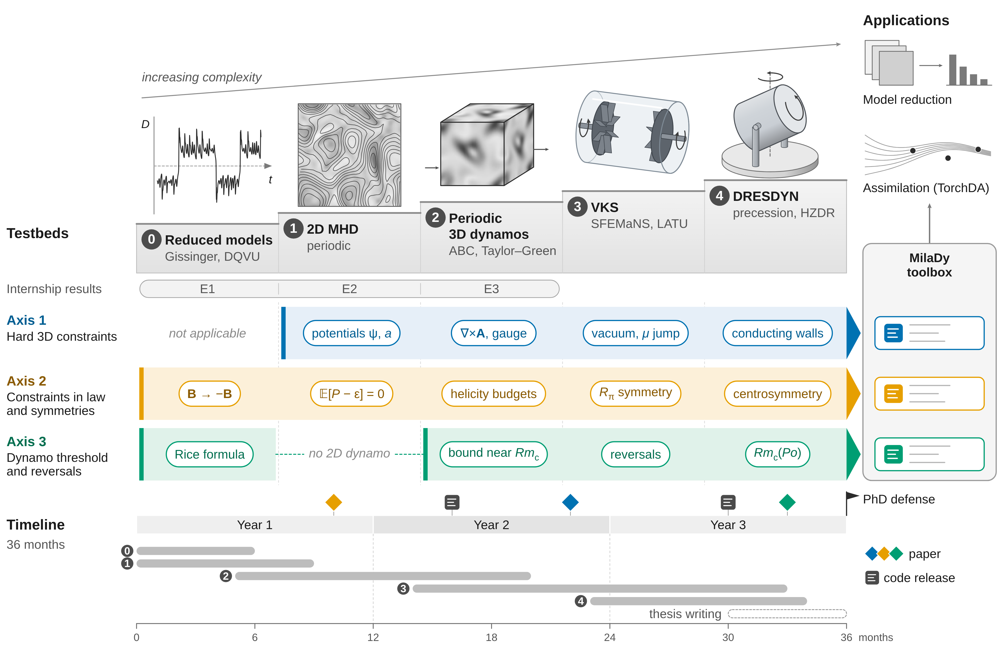

Conditional generative models with hard and distributional physical constraints for turbulent dynamos
PhD topic proposal · ANR MilaDy project · co-supervision by S. Cheng (ENPC/CEREA) and D. Lucor (LISN)
| Item | Content |
|---|---|
| Title | Conditional generative models with hard and distributional physical constraints for turbulent dynamos |
| Project | ANR MilaDy, “Modélisation par apprentissage automatique des dynamos turbulentes” [Machine-learning modeling of turbulent dynamos], ANR-25-CE51-0077 (collaborative research project, committee CE51). Coordination: C. Nore (LISN). Partners: LISN, Lagrange laboratory (Observatoire de la Côte d’Azur, Nice), CEREA (École nationale des ponts et chaussées). Start in January 2026, duration 48 months (ANR page). |
| Envisaged supervision | S. Cheng (CEREA, ENPC) and D. Lucor (LISN, CNRS). S. Cheng’s “Opportunities” page states: “The PhD student will be co-supervised by Sibo Cheng and Didier Lucor”; the 2027 internship offer specifies that a funded PhD within the project “may be offered” depending on the results of the internship. |
| Collaborations | C. Nore (LISN: SFEMaNS code, simulations of VKS and of precession) and Y. Ponty (Lagrange, OCA: pseudo-spectral codes, LATU code, Taylor–Green and ABC dynamos), as in the internship offer. |
| Locations | CEREA (ENPC, Champs-sur-Marne); proposed visits to LISN (Université Paris-Saclay) and to OCA (Nice), see the schedule. |
| Duration | 36 months. Working assumption: start in fall 2027, after the spring 2027 internship. |
| Keywords | conditional flow matching; hard constraints (vector potential, gauge, matching conditions); distributional constraints (stationarity identities, I-projection); equivariance; Rice formula; reversals; dynamo threshold; VKS; DRESDYN; model reduction; data assimilation |
| Starting point | the prospective internship report and its three experiments E1 to E3; the preparation modules |
Status of this document This PhD topic is an independent proposal, written to prepare the MilaDy 2027 internship. It was neither requested nor validated by S. Cheng, D. Lucor, C. Nore, Y. Ponty or the MilaDy consortium: the supervision indicated is only “envisaged”, based on S. Cheng’s page cited in the summary table (https://scheng2024.github.io/opportunities/). The internship has not yet taken place. The results called “internship results” come from the small-scale, processor-based (CPU) experiments of this repository (experiences/), and their figures are taken from the digest experiences/resultats/digest.md. Published results are attributed to their authors; what this work claims is written “to our knowledge, after a literature search as of November 6, 2026”; conjectures are labeled as such. The schedule, the quantitative criteria and the computing budget are working assumptions to be discussed.
Abstract
A turbulent dynamo generates a magnetic field whose statistics depend strongly on the control parameters (kinetic and magnetic Reynolds numbers, permeability of the materials, forcing asymmetry) and which can reverse abruptly, as in the von Kármán Sodium (VKS) experiment. Direct simulations of these flows are costly, so that only a few points in parameter space are available, with few reversals per simulation. The ANR MilaDy project aims to derive reduced models from them, to study reversals and to explore the DRESDYN device; the associated internship offer calls for generative models conditioned on the parameters, which respect the energy balance and zero divergence.
The proposed thesis builds conditional snapshot generators of (\mathbf{u}, \mathbf{B}) by flow matching and imposes the physical constraints on them at the level at which they hold. Hard constraints, which hold for each field (zero divergence, matching conditions to the vacuum, permeability jumps), go through the architecture: functional decoders based on a vector potential in a bounded domain. Distributional constraints, which hold only for the ensemble of fields, go through the generated distribution: the symmetries \mathbf{B} \to -\mathbf{B} and R_\pi through equivariance, the stationarity identities \mathbb{E}_{\mu_{\boldsymbol\lambda}}[\mathcal{L}_{\boldsymbol\lambda}\varphi] = 0 (energy and helicity budgets) through a training loss that also applies to parameters without data, or through exponential tilting at sampling time.
The topic then connects the generated distribution to reversals. The Rice formula gives the frequency of zero crossings of the dipole moment from the stationary distribution alone and from the right-hand side of the equations, which can be computed on a snapshot: a snapshot generator thus predicts a reversal rate without time integration. The thesis establishes its conditions of validity and its limits (chattering around zero, waiting times that the distribution does not determine), and quantifies the unavoidable error of a generator that is smooth in \boldsymbol\lambda near a dynamo threshold (Proposition 9 of the shared theoretical note). Finally, the generated fields are used to identify reduced models of DQVU type and as a prior distribution for data assimilation, whose posterior is bimodal in \pm\mathbf{B}.
The experimental plan climbs a ladder of five tiers: reduced models of reversals (Gissinger, DQVU), periodic 2D MHD, periodic 3D dynamos (ABC, Taylor–Green), VKS in cylindrical geometry (SFEMaNS, LATU), then DRESDYN (precession). The first three tiers extend experiments E1 to E3 of the internship. Each tier has its own quantitative success criteria and stopping conditions; the budget is estimated at about 10^4 GPU hours, under explicit assumptions (§3.7).
1. Context and chosen direction
1.1 Two directions, one thesis
The Supervisors page compares six PhD directions located at the intersection of the work of S. Cheng, D. Lucor, C. Nore and Y. Ponty; directions A and B come out on top there under all three sets of weights tried. This topic merges these two directions. Direction A targets a conditional generator of parametric 3D MHD fields, p(\mathbf{u}, \mathbf{B} \mid Re, Rm, \mu_r, \text{asymmetry}), for VKS; its bottlenecks are generalization beyond the few simulated points, the preservation of \nabla\cdot\mathbf{u} = 0 and \nabla\cdot\mathbf{B} = 0 after decoding, the symmetries, and the hybrid Fourier × finite element representation of the data. Direction B targets the generation and probabilistic forecasting of reversals and rare events; its bottlenecks are the scarcity of reversals, heavy-tailed statistics, and the consistency between generated fields and reduced dynamics.
Three reasons justify the merger. The first is institutional: the two official objectives of MilaDy are the study of reversals and of “explosive” dynamos through reduced models able to distinguish precursor, reversal and recovery, and the optimization of DRESDYN through parametric reduced models (ANR page); the internship offer calls for 3D fields conditioned on the parameters, which respect “energy balance and divergence-free conditions” and which then feed reduced models and assimilation. A conditional generator (A) from which the statistics of reversals can be extracted (B) addresses both objectives at once.
The second reason is theoretical, and it is the core of the topic. Two results connect a snapshot generator to the statistics of reversals without requiring long time series. The stationarity identities (class C4 of the taxonomy) constrain the generated distribution, including at parameters where no data are available. The Rice formula turns the stationary distribution and the right-hand side F_{\boldsymbol\lambda} of the equations into a frequency of zero crossings of the dipole. The symmetry \mathbf{B} \to -\mathbf{B} links the two: it fixes the weights of the two polarities, which the stationarity identities do not fix (Proposition 4 of the shared note and §2.4).
The third reason has to do with risk. Direction B alone requires long series to estimate frequencies of rare events, whereas each simulation contains only a few of them. The merger extracts from snapshots everything the stationary distribution contains (means, budgets, mean crossing frequency) and reserves temporal information for what the distribution does not contain, such as the distribution of waiting times: this is an explicit limit of question Q3, proved in §2.5. The other directions are not abandoned: data assimilation with a generative prior becomes the downstream use of question Q4; DRESDYN becomes tier 4; hard constraints on hybrid meshes become question Q1; testbeds and physical metrics become the common evaluation protocol of §3.1.

1.2 What the internship established
The three experiments of the internship, detailed in the Experiments section of the report, run on a CPU in a few hours. They prove nothing at the scale of laboratory dynamos; they validate the computational pipeline and test the propositions of the theoretical note on cases where the truth is known. The figures below come from the digest of results; the E1 section of the report details those of E1.
E1, Gissinger’s three-mode model. Gissinger’s (2012) (Q, D, V) model produces chaotic reversals of the dipole D; E1 learns the stationary distribution p(Q, D, V \mid \Gamma) by conditional flow matching, around the value of the forcing parameter where reversals appear. It compares a baseline model, data augmentation by the symmetry, an equivariant velocity field, exponential tilting on nine stationarity identities (monomials of degree at most 2), fine-tuning with a stationarity loss imposed at values of \Gamma drawn across the whole interval [0.80 ; 1.00], hence also between the training values, and the projection of each sample onto \mathrm{d}E/\mathrm{d}t = 0. It also estimates the frequency of zero crossings of D through the Rice formula from the generated samples alone, and compares it with the count on the simulations. At values of \Gamma never seen, the equivariant field keeps the distribution symmetric (asymmetry at the noise floor, 0.004), whereas augmentation symmetrizes it only at the training values; it divides the energy distance by 4.6 relative to the baseline model. The per-sample projection multiplies it by 9, as predicted by Corollary 6. The Rice formula recovers the crossing frequency with a cumulative relative error of 4–6% on the reference distribution, of 14% on the generated distribution far from the threshold (up to 65% at a single value), and of 42% near the threshold, where the generator smooths out the jump in the distribution (Proposition 9). Two negative results matter for the thesis: at the test values of \Gamma, the stationarity loss halves the residuals of a good model, imposed and non-imposed alike (0.0136 against 0.0324 for the control, and 0.0113 against 0.0224), but at the training values the gain is smaller and does not go below the residuals of the starting model; it also narrows the distribution of \mathrm{d}E/\mathrm{d}t by a quarter, and it fails on a biased model (one seed out of two diverges); a posteriori tilting improves no distribution.
E2, forced 2D MHD. E2 generates snapshots (\mathbf{u}, \mathbf{B}) of a periodic 2D MHD forced by white noise, on a 32^2 grid, conditioned on the magnetic diffusivity \eta (six training values, five interleaved test values, 2400 training snapshots per \eta). The representation consists of 220 independent Fourier modes (dimension 880 in potentials, 1760 in components), and the network is a multilayer perceptron of width 1024 trained for 6000 iterations. At the test values of \eta, the measurements are as follows.
- The relative divergence of \mathbf{u} is 0.41 for the free model, 0.34 with a soft penalty, 2.0 \times 10^{-8} with the projected flow, 5.1 \times 10^{-17} with the final projection and 1.8 \times 10^{-17} with the potentials (\psi, a). The potentials therefore reach machine precision without degrading quality: their energy distance between distributions of descriptors (2.58) is that of the final projection (2.61).
- The soft penalty, although unbiased at the optimum for a linear constraint (Proposition 3 of the note), degrades the magnetic energy: relative error of 1.68 on \mathbb{E}[E_B], against 0.37 for the potentials. Absence of bias at the population level says nothing about optimization on a finite budget.
- Fine-tuning the potentials with a stationarity loss (mean energy budget imposed at randomly drawn \eta, hence also at the test \eta without data) brings the relative residual of the energy budget in distribution from 0.46 (control fine-tuned without the loss) down to 0.061, the spectrum error from 0.165 to 0.070 and the energy distance from 2.52 to 0.70. The Monte Carlo noise floor (subsample of the data of the same size) is at 0.0018: the model remains far from the data.
- Rescaling each sample onto the energy budget cancels the residual in distribution (8.3 \times 10^{-6}) but crushes the spread of the dissipation: its standard deviation is only 8.6 \times 10^{-4} times that of the data, as Corollary 6 of the note predicts. Exponential tilting on three identities (energy, cross helicity, \langle a^2\rangle) reduces the energy residual from 0.47 to 0.19, but with a mean effective sample size of 0.29 times the number of samples, a reduced spread (ratio of standard deviations 0.20) and an energy distance that increases (2.62 to 4.15): reweighting a model that is too far from the data is not enough.
E3, kinematic ABC dynamo. E3 computes the growth rate \lambda(Rm) of the magnetic field in the ABC flow (A = B = C = 1, Rm = 1/\eta) with a 32^3 pseudo-spectral scheme in curl form. The interpolated thresholds are 8.87, 17.6 and 26.8, to be compared with the published windows 8.9 < Rm < 17.5 and Rm > 27 (Archontis et al. 2003, who cite Galloway and Frisch). The relative divergence stays below 1.6 \times 10^{-16} at all Rm. Near the second threshold, precision is limited: at Rm = 17.5, the rate is 2.3 \times 10^{-4} over the second half of the simulation, -2.2 \times 10^{-4} over the last quarter and -5.2 \times 10^{-4} at resolution 48^3. E3 contains no generative model: it validates the 3D tier and the curl form that preserves \nabla\cdot\mathbf{B} = 0.


These experiments do not demonstrate feasibility in 3D, in a bounded domain or at high resolution; §4.3 details what they establish and what they leave open.
1.3 Research questions
The thesis is organized around four questions. Each is taken up in the theoretical part (§2), translated into experiments by tier (§3) and into risks (§4).
Q1 — Hard constraints in 3D in bounded geometry. In a periodic box, zero divergence is imposed through the Leray projection in Fourier space or through a vector potential in Coulomb gauge, \hat{\mathbf{A}} = \mathrm{i}\mathbf{k}\times\hat{\mathbf{B}}/|\mathbf{k}|^2; E2 and E3 confirm this. Experimental dynamos are in cylindrical geometry, with walls, matching to the external field and permeability jumps. The sub-questions are the following.
- Which space of potentials should be described so that \mathbf{B} = \nabla\times\mathbf{A} covers exactly the space of admissible fields, with which gauge and which boundary conditions on \mathbf{A} (§2.1)?
- How can the matching to an external potential field (“vacuum” condition), which is linear but nonlocal, be imposed without solving an exterior Laplace problem per sample?
- How can the permeability jumps \mu_r of the soft-iron impellers be represented, where \mathbf{B}\cdot\mathbf{n} is continuous but so is the tangential component of \mathbf{B}/\mu_r, which forces a kink in the potential?
- How can one decode in the native representation of SFEMaNS, a Fourier decomposition in azimuth and Lagrange finite elements in the meridian plane, with regularity on the axis and a discrete control of the divergence comparable to that of the code?
- Is a poloidal–toroidal decomposition with two scalars preferable to the three-component vector potential plus a gauge?
Q2 — Distributional constraints for field PDEs. The stationarity identities are known (Echeverría 1982; Ethier and Kurtz 1986), and the weak form of Fokker–Planck has already served as a loss for a sample generator in dimension at most 100 (Cai et al. 2026). The thesis applies them to the generator of a field PDE, conditioned on parameters. The sub-questions are the following.
- Which test functions should be chosen: energy, magnetic and cross helicities, energy per spectral band (scale-by-scale budget), random functions? How should the identities be weighted and normalized?
- How can the loss be estimated without bias and with controlled variance when each evaluation requires sampling the generator differentiably (§2.3)?
- What does the loss guarantee at parameters without data, where it is the only information? E2 shows a gain at these parameters; one needs to understand when it persists.
- How can one live with the non-uniqueness of invariant measures: every invariant measure (fixed point, unstable periodic orbit, mixture) satisfies the identities, so that the data-fitting term remains indispensable (§2.2)?
Q3 — Dynamo threshold and reversals. The conditional generator must cross the dynamo threshold and the region where reversals appear. The sub-questions are the following.
- Under which conditions does the Rice formula apply to the dipole moment D = \ell(\mathbf{B}) of an MHD dynamo, with \dot D = \ell(\nabla\times(\mathbf{u}\times\mathbf{B}) + \eta\Delta\mathbf{B}) computed on the generated snapshot; how can the chattering around zero be corrected (§2.5)?
- What error does a generator that is smooth in \boldsymbol\lambda make near a bifurcation, subcritical (jump in the distribution) or supercritical (square-root amplitude) (§2.6)?
- In a hysteresis region, should the generator be conditioned on the state or on the history, and how?
- How can one estimate what the stationary distribution does not give, such as the distribution of waiting times between reversals, from short trajectories launched from generated samples?
Q4 — Downstream uses. The generated fields must serve the project. The sub-questions are the following.
- Can a reduced model of DQVU type (Bousquet et al. 2026) be identified from generated snapshots and the right-hand side F_{\boldsymbol\lambda}, without differentiating time series, and under which conditions does the reduced drift inherit the stationarity identities (§2.7)?
- How can the generator be used as a prior distribution in data assimilation (background ensembles, latent variable) with TorchDA (Cheng et al. 2025), when the posterior is bimodal in \pm\mathbf{B} near a reversal?

1.4 Prior work and positioning
The topic relies on published results that must be cited, not claimed. The table separates what is known from what the thesis adds.
| Building block | Already published (to be cited) | What the thesis adds |
|---|---|---|
| Invariance and identities \mathbb{E}_\mu[\mathcal{L}\varphi] = 0 | criterion through the generator on a core of test functions (Echeverría 1982; Ethier and Kurtz 1986; Liggett, via Behme and Schnurr 2015); Stein’s method through the generator (Barbour 1988, 1990; Gorham and Mackey 2015; Gorham et al. 2019; Liu, Lee and Jordan 2016) | classical budgets of forced MHD rewritten as stationarity identities of the truncated system (energy, helicities, spectral bands), with the Itô term |
| Weak form of Fokker–Planck as a generator loss | Weak Generative Sampler (Cai, Cao, Huang, Zhou, SIAM J. Sci. Comput. 2026), dimension at most 100; min-max antecedent WAN (Zang et al. 2020) | parametric conditional loss for a field PDE, imposed at parameters without data; unbiased estimator through half-batches |
| Learning through the invariant measure | Yang et al. 2023; Botvinick-Greenhouse et al. 2023; Jiang et al. 2023; DySLIM (Schiff et al. 2024); PINN-IMSM (Chen et al. 2026) | application to the budgets of a dynamo, with the symmetry imposed separately |
| I-projection, exponential tilting of a generator | Csiszár 1975; Jaynes 1957; Khalifa et al. 2021; Pitera and Chodera 2012; Mun 2026 (moments, at inference); Tauberschmidt et al. 2026 (weak PDE residual, per-sample reward) | identities without a target value, linear in the distribution, instead of external moments |
| Zero divergence in generative models | stream function (FunDiff, Wang et al. 2026); Leray (Genuist et al. 2026; PCDM, Li et al. 2026; Li X. et al. 2026); divergence-free networks (Richter-Powell et al. 2022) | vector potential in a bounded domain with vacuum matching and \mu_r jumps |
| Equivariant flows and invariant distributions | classical result for equivariant normalizing flows | direct extension to a joint state–parameter action, applied to R_\pi (forcing asymmetry) |
| Zero-crossing frequency | Rice formula (Rice 1944, 1945; Azaïs and Wschebor 2009) | application to a dynamo snapshot generator, without time integration |
What this work claims is formulated with caution: to our knowledge, after a literature search as of November 6, 2026, no publication combines the following elements.
- The stationarity identities of a field PDE (MHD: budgets of energy, cross helicity and \langle a^2\rangle in 2D) used as distributional constraints of a parametric conditional generative model, which can be imposed at parameters without data, and which are identities without a target value (unlike the external moments of Khalifa et al. 2021 or Mun 2026).
- The statement and the measurement of the inconsistency of a per-sample constraint for a stationary budget (Corollary 6 of the note, measured in E1 and E2).
- The Rice formula applied to a snapshot generator to predict the frequency of reversals without time integration (no prior work found).
- The complementarity between symmetry and stationarity: the identities do not fix the weights of the symmetric ergodic components, so equivariance is necessary.
- A technical point: the naive estimator (square of a mini-batch mean) of a stationarity loss equals (\mathbb{E}g)^2 + \mathrm{Var}(g)/n and penalizes the spread of the distribution; the estimator based on the product of the means of two half-batches removes this bias.
- The lower bound on the error near a jump in the distribution (Proposition 9 of the note), applied to the dynamo threshold.
The absence of any diffusion or flow matching model trained on dynamo simulations is a negative claim: the search did not find one (the closest MHD work, Kacmaz et al. 2025, is in 2D and its generative model does not impose \nabla\cdot\mathbf{B} = 0), but an absence cannot be proved. A new literature watch will be carried out before each submission.
2. Theoretical part
This part takes up the theoretical note shared by the report and the PhD topic (specs/theorie-brief.md), without contradicting it, and extends it to questions Q1 to Q4. The boxes are numbered 2.n; when a statement takes up a proposition of the note, its number in the note is given in brackets, for example “[note: Prop. 8]”. The statements are of three kinds: published results, attributed to their authors; propositions proved here, generally elementary and sometimes probably known in other forms; conjectures, labeled as such, with what would be needed to prove them. The notation is that of the site (specs/notations.md); the flow time t \in [0, 1] is not a physical time, and the flow’s velocity field v_\theta must not be confused with the physical velocity \mathbf{u}.
The framework is that of the note. The control parameters are \boldsymbol\lambda \in \Lambda \subset \mathbb{R}^p. The discretized state \mathbf{x} \in \mathbb{R}^D follows \mathrm{d}\mathbf{x} = F_{\boldsymbol\lambda}(\mathbf{x})\,\mathrm{d}t + \Sigma\,\mathrm{d}W_t, with generator \mathcal{L}_{\boldsymbol\lambda}\varphi = F_{\boldsymbol\lambda}\cdot\nabla\varphi + \tfrac12\Sigma\Sigma^\top : \nabla^2\varphi. The data are snapshots of a statistically stationary state, with distribution \mu_{\boldsymbol\lambda}. The model is q_\theta(\cdot\mid\boldsymbol\lambda) = (\Phi^{\boldsymbol\lambda}_1)_\#\mathcal{N}(0, I), where \Phi^{\boldsymbol\lambda}_t is the flow of \dot{\mathbf{z}} = v_\theta(\mathbf{z}, t, \boldsymbol\lambda), learned by flow matching (Lipman et al. 2023) on the linear path \mathbf{x}_t = (1-t)\mathbf{x}_0 + t\mathbf{x}_1.
The following table maps the statements of the note to those of this page.
| Theoretical note | This page | Subject |
|---|---|---|
| Proposition 1 | Proposition 2.3 | C1 constraint by construction, extended to the bounded domain |
| Propositions 2 and 3 | Proposition 2.10 | optimal flow on a subspace; unbiased linear penalty |
| Proposition 4 | Proposition 2.24, Remark 2.26 | equivariance, extended to a joint state–parameter action |
| Proposition 5 | Propositions 2.12 and 2.13 | stationarity identities, budgets of truncated MHD |
| Corollary 6 | Corollary 2.16 | inconsistency of the per-sample constraint, with a bound in W_1 |
| Proposition 7 | Proposition 2.21 | I-projection, proof without a finiteness assumption |
| Proposition 8 | Propositions 2.29 to 2.31 | Rice formula, thresholds, window estimator |
| Proposition 9 | Propositions 2.34 to 2.36 | error near a jump in the distribution and near a supercritical threshold |
| (new) | Propositions 2.6, 2.8, 2.15, 2.19, 2.20, 2.32, 2.39 to 2.41; Conjectures 2.17, 2.33, 2.38 | interfaces, poloidal–toroidal, non-sufficiency, estimator, consistency, waiting times, model reduction and assimilation |

2.1 Constrained field spaces and divergence-free decoders in a bounded domain
Question Q1 asks to generate magnetic fields that satisfy \nabla\cdot\mathbf{B} = 0 exactly in a bounded domain, with boundary and interface conditions. We first fix the spaces, then show what a potential-based decoder guarantees and what it does not.
Definition 2.1 — Field spaces Let \Omega \subset \mathbb{R}^3 be a bounded connected open set with Lipschitz boundary, whose boundary \Gamma = \partial\Omega has connected components \Gamma_0 (the outer boundary), \Gamma_1, \dots, \Gamma_I, with outward normal \mathbf{n}. We write
H(\mathrm{div}, \Omega) = \{\mathbf{v} \in L^2(\Omega)^3 : \nabla\cdot\mathbf{v} \in L^2(\Omega)\}, \qquad H(\mathrm{rot}, \Omega) = \{\mathbf{v} \in L^2(\Omega)^3 : \nabla\times\mathbf{v} \in L^2(\Omega)^3\}.
A field in H(\mathrm{div}, \Omega) has a normal trace \mathbf{v}\cdot\mathbf{n} \in H^{-1/2}(\Gamma); a field in H(\mathrm{rot}, \Omega) has a tangential trace \mathbf{v}\times\mathbf{n}. The space of admissible magnetic fields is
\mathfrak{B}(\Omega) = \{\mathbf{B} \in H(\mathrm{div}, \Omega) : \nabla\cdot\mathbf{B} = 0,\ \langle \mathbf{B}\cdot\mathbf{n}, 1\rangle_{\Gamma_i} = 0 \text{ for } 0 \le i \le I\}.
When \Gamma is connected (I = 0), the flux condition follows from \nabla\cdot\mathbf{B} = 0 by the divergence theorem. The domain is called simply connected when every closed curve in it can be contracted to a point; a solid cylinder is, a torus is not.
The following result is published; we state it in the simply connected case, which is that of a solid cylindrical vessel, and we prove the uniqueness part, the most useful one for a decoder.
Theorem 2.2 — Vector potential in Coulomb gauge (Amrouche, Bernardi, Dauge and Girault 1998; Amrouche and Seloula 2011) Let \Omega be bounded, connected, simply connected, of class C^{1,1}.
For every \mathbf{B} \in \mathfrak{B}(\Omega), there exists a unique \mathbf{A} \in H^1(\Omega)^3 such that \nabla\times\mathbf{A} = \mathbf{B}, \nabla\cdot\mathbf{A} = 0 in \Omega and \mathbf{A}\cdot\mathbf{n} = 0 on \Gamma; moreover \lVert\mathbf{A}\rVert_{H^1} \le C\,\lVert\mathbf{B}\rVert_{L^2}.
If in addition \mathbf{B}\cdot\mathbf{n} = 0 on \Gamma, there exists a unique \mathbf{A} \in H^1(\Omega)^3 such that \nabla\times\mathbf{A} = \mathbf{B}, \nabla\cdot\mathbf{A} = 0, \mathbf{A}\times\mathbf{n} = 0 on \Gamma and \langle\mathbf{A}\cdot\mathbf{n}, 1\rangle_{\Gamma_i} = 0 for 0 \le i \le I.
The two statements are Theorems 3.2 and 3.4 of Amrouche and Seloula (2011), stated in the L^p norm and for a domain that may be non-simply connected (flux conditions through cuts are then added); the Hilbert case in a non-smooth domain is treated by Amrouche et al. (1998).
Proof. Uniqueness in (i). If \mathbf{A}_1 and \mathbf{A}_2 both qualify, \mathbf{w} = \mathbf{A}_1 - \mathbf{A}_2 satisfies \nabla\times\mathbf{w} = 0, \nabla\cdot\mathbf{w} = 0 and \mathbf{w}\cdot\mathbf{n} = 0. A square-integrable irrotational field on a simply connected domain is a gradient (Girault and Raviart 1986): \mathbf{w} = \nabla\chi with \chi \in H^1(\Omega). Then \Delta\chi = 0 in \Omega and \partial_n\chi = 0 on \Gamma, and Green’s formula gives \int_\Omega |\nabla\chi|^2 = \int_\Gamma \chi\,\partial_n\chi = 0, hence \mathbf{w} = 0.
Uniqueness in (ii). As above, \mathbf{w} = \nabla\chi with \Delta\chi = 0. The condition \mathbf{w}\times\mathbf{n} = 0 says that the tangential gradient of \chi vanishes on \Gamma: \chi equals a constant c_i on each \Gamma_i. Green’s formula gives \int_\Omega |\nabla\chi|^2 = \sum_i c_i \langle \mathbf{w}\cdot\mathbf{n}, 1\rangle_{\Gamma_i} = 0, hence \mathbf{w} = 0.
Existence in (i), sketch. Thanks to the flux conditions, \mathbf{B} is extended to a divergence-free field \tilde{\mathbf{B}} with compact support in \mathbb{R}^3 (each hole is filled with a divergence-free field with prescribed normal trace, which amounts to a compatible Neumann problem). The Biot–Savart potential \tilde{\mathbf{A}} = \nabla\times(-\Delta)^{-1}\tilde{\mathbf{B}} satisfies \nabla\times\tilde{\mathbf{A}} = \tilde{\mathbf{B}} and \nabla\cdot\tilde{\mathbf{A}} = 0. Finally, the normal trace is corrected: if \chi solves \Delta\chi = 0 in \Omega, \partial_n\chi = -\tilde{\mathbf{A}}\cdot\mathbf{n} on \Gamma (a compatible problem since \int_\Gamma \tilde{\mathbf{A}}\cdot\mathbf{n} = \int_\Omega \nabla\cdot\tilde{\mathbf{A}} = 0), then \mathbf{A} = \tilde{\mathbf{A}} + \nabla\chi qualifies. The H^1 regularity and the estimate come from elliptic regularity on a C^{1,1} domain; we refer to the sources for the details. ∎
The theorem says that in Coulomb gauge with \mathbf{A}\cdot\mathbf{n} = 0, the potential is a coordinate on the space of admissible fields: no field is lost and none is counted twice. It is the 3D generalization, in a bounded domain, of the stream function used by FunDiff (Wang et al. 2026) and by experiment E2.
Proposition 2.3 — Potential-based decoder in a bounded domain [note: Prop. 1] Let \mathcal{D} : \mathcal{Z} \to H^1(\Omega)^3 be a measurable decoder and \mathbf{B} = \nabla\times\mathcal{D}(\mathbf{z}).
Whatever the distribution of \mathbf{z}, \mathbf{B} \in \mathfrak{B}(\Omega) almost surely: the divergence constraint (class C1) is satisfied by construction.
If \mathcal{D} takes its values in the gauge space G = \{\mathbf{A} \in H^1(\Omega)^3 : \nabla\cdot\mathbf{A} = 0,\ \mathbf{A}\cdot\mathbf{n} = 0 \text{ on } \Gamma\} and if \Omega is simply connected and C^{1,1}, the map T = \nabla\times : G \to \mathfrak{B}(\Omega) is a continuous linear bijection with continuous inverse. For two distributions \tilde\nu_1, \tilde\nu_2 on G,
\lVert T^{-1}\rVert^{-1}\, W_2(\tilde\nu_1, \tilde\nu_2) \;\le\; W_2(T_\#\tilde\nu_1, T_\#\tilde\nu_2) \;\le\; \lVert T\rVert\, W_2(\tilde\nu_1, \tilde\nu_2),
with the H^1 norm on G and the L^2 norm on \mathfrak{B}. Learning the distribution of potentials in a fixed gauge is therefore equivalent, up to constants, to learning the distribution of fields.
Proof.
- For \chi \in C_c^\infty(\Omega), \langle\nabla\cdot\mathbf{B}, \chi\rangle = -\int_\Omega (\nabla\times\mathbf{A})\cdot\nabla\chi = -\int_\Omega \mathbf{A}\cdot\nabla\times\nabla\chi = 0, the integration by parts being legitimate because \chi has compact support. The flux of \nabla\times\mathbf{A} through each closed surface \Gamma_i is zero (Stokes’ formula on a surface without boundary, extended to H^1 by density).
- T is linear, continuous from H^1 to L^2, injective and surjective by Theorem 2.2 (i), and the estimate \lVert\mathbf{A}\rVert_{H^1} \le C\lVert\mathbf{B}\rVert_{L^2} gives the continuity of T^{-1}. For a coupling \pi of (\tilde\nu_1, \tilde\nu_2), (T\times T)_\#\pi is a coupling of the images and \lVert T\mathbf{a} - T\mathbf{b}\rVert \le \lVert T\rVert\,\lVert\mathbf{a} - \mathbf{b}\rVert; we take the infimum. The other inequality is obtained in the same way with T^{-1}. ∎
Remark 2.4 — Unfixed gauge If the decoder does not fix the gauge, two potentials \mathbf{A} and \mathbf{A} + \nabla\chi give the same field: the distribution of \mathbf{B} remains well defined, but the target distribution in the space of potentials depends on the gauge chosen to prepare the data. The training potentials must therefore be computed in a fixed and unique gauge (Theorem 2.2); otherwise flow matching learns gauge noise. In a periodic box, the Coulomb gauge reads \hat{\mathbf{A}}(\mathbf{k}) = \mathrm{i}\mathbf{k}\times\hat{\mathbf{B}}(\mathbf{k})/|\mathbf{k}|^2 for \mathbf{k} \neq 0, since \mathrm{i}\mathbf{k}\times(\mathrm{i}\mathbf{k}\times\hat{\mathbf{A}}) = |\mathbf{k}|^2\hat{\mathbf{A}} when \mathbf{k}\cdot\hat{\mathbf{A}} = 0.
Vacuum matching is the second difficulty. In VKS as in SFEMaNS, the conductor \Omega is surrounded by an insulating medium where the field derives from a scalar potential (Nore et al. 2018). With \mu_r = 1 on both sides and no surface current, \mathbf{B} is continuous across \Gamma and matches an external field \nabla\phi with \Delta\phi = 0 outside \bar\Omega and \phi \to 0 at infinity.
Remark 2.5 — Vacuum matching is a nonlocal linear constraint Let \mathcal{N} denote the exterior Neumann-to-Dirichlet operator, which maps a flux datum g on \Gamma (with zero mean) to the trace \phi|_\Gamma of the solution of the exterior problem \Delta\phi = 0, \partial_n\phi = g, \phi \to 0 at infinity. The continuity of \mathbf{B} reads \mathbf{B}\cdot\mathbf{n} = \partial_n\phi and \mathbf{n}\times\mathbf{B} = \mathbf{n}\times\nabla_\Gamma\phi, that is,
\mathbf{n}\times\mathbf{B} = \mathbf{n}\times\nabla_\Gamma\,\mathcal{N}(\mathbf{B}\cdot\mathbf{n}) \quad \text{on } \Gamma.
This is a linear constraint in \mathbf{B} (class C1), but a nonlocal one: the tangential trace at a point depends on the normal flux over the whole boundary. Two consequences follow. On the one hand, Propositions 2 and 3 of the note apply: the orthogonal projection onto this space is exact, and a penalty on the endpoint prediction is unbiased at the optimum; but projecting costs the solution of an exterior problem per sample (by boundary elements, or by a basis of spherical harmonics if the matching is done on an enclosing sphere). On the other hand, one can also jointly decode \mathbf{A} in the conductor and \phi in an insulating layer, then match them through an interface penalty, as SFEMaNS does with an interior penalty method (Guermond et al. 2007, 2009). The choice between these routes is a sub-question of Q1. The simplified pseudo-vacuum conditions (\mathbf{H}\times\mathbf{n} = 0) are local but shift the threshold: at Re = 1.5\times 10^3 and \mu_r = 50, Nore et al. (2018) find Rm_c = 90 \pm 5 with pseudo-vacuum against 130 \pm 10 with the vacuum condition.
The third difficulty is the permeability jump at the soft-iron impellers. In the reference simulation of Bousquet et al. (2026), \mu_r = 16 in the impellers and 1 elsewhere. Across an interface \Sigma without surface current, the normal component of \mathbf{B} and the tangential component of \mathbf{H} = \mathbf{B}/\mu_r (in Alfvén units) are continuous.
Proposition 2.6 — What a potential guarantees at a permeability jump Let \Omega = \Omega_- \cup \Sigma \cup \Omega_+, with \mu_r = \mu_\pm constant in \Omega_\pm and \mu_+ \neq \mu_-, and \mathbf{n} the normal to \Sigma pointing toward \Omega_+.
If \mathbf{A} \in H(\mathrm{rot}, \Omega), then \mathbf{B} = \nabla\times\mathbf{A} satisfies \nabla\cdot\mathbf{B} = 0 in the sense of distributions on all of \Omega; in particular [\mathbf{B}\cdot\mathbf{n}]_\Sigma = 0.
If \mathbf{A} is of class C^1 in a neighborhood of \Sigma, then [\mathbf{n}\times\mathbf{H}]_\Sigma = (1/\mu_+ - 1/\mu_-)\,\mathbf{n}\times\mathbf{B}, which vanishes only if \mathbf{B} is normal to \Sigma. A decoder that is smooth in space (for example a multilayer perceptron of the coordinates, which is C^\infty) therefore cannot satisfy the interface condition exactly.
Proposed construction. Let d be the signed distance to \Sigma (positive in \Omega_+), smooth in a tubular neighborhood of \Sigma, and \mathbf{n} = \nabla d; outside this neighborhood, the term added below is multiplied by a smooth cutoff function equal to 1 near \Sigma, which changes nothing on \Sigma. For a smooth \mathbf{A}_0, set \mathbf{B}_0 = \nabla\times\mathbf{A}_0 and
\mathbf{A} = \mathbf{A}_0 + \kappa\,\lvert d\rvert\,\mathbf{n}\times\mathbf{B}_0, \qquad \kappa = \frac{\mu_- - \mu_+}{\mu_- + \mu_+}.
Then \mathbf{B} = \nabla\times\mathbf{A} satisfies exactly \nabla\cdot\mathbf{B} = 0, [\mathbf{B}\cdot\mathbf{n}]_\Sigma = 0 and [\mathbf{n}\times\mathbf{H}]_\Sigma = 0.
Proof.
For \chi \in C_c^\infty(\Omega), \nabla\chi \in H_0(\mathrm{rot}, \Omega) and Green’s formula in H(\mathrm{rot}) (Girault and Raviart 1986) gives \int_\Omega (\nabla\times\mathbf{A})\cdot\nabla\chi = \int_\Omega \mathbf{A}\cdot\nabla\times\nabla\chi = 0. If \mathbf{B} is smooth on each side of \Sigma, its divergence in the sense of distributions is the sum of the pointwise divergence, which is zero, and of the measure [\mathbf{B}\cdot\mathbf{n}]\,\delta_\Sigma; it is zero, hence so is the jump.
If \mathbf{A} is C^1, \mathbf{B} is continuous and [\mathbf{n}\times\mathbf{B}] = 0; then \mathbf{n}\times\mathbf{H}_\pm = \mathbf{n}\times\mathbf{B}/\mu_\pm and we subtract.
\mathbf{A} is continuous (the added term vanishes on \Sigma) and piecewise smooth, hence in H(\mathrm{rot}), and (i) applies. Set \mathbf{A}_1 = \kappa\,\mathbf{n}\times\mathbf{B}_0. Since \nabla\lvert d\rvert = \pm\mathbf{n} in \Omega_\pm,
\mathbf{B} = \mathbf{B}_0 + \lvert d\rvert\,\nabla\times\mathbf{A}_1 + \nabla\lvert d\rvert\times\mathbf{A}_1, \qquad \mathbf{B}_\pm\big|_\Sigma = \mathbf{B}_0 \pm \mathbf{n}\times\mathbf{A}_1.
The normal component \mathbf{n}\cdot\mathbf{B}_\pm = \mathbf{n}\cdot\mathbf{B}_0 is continuous. For the tangential component, \mathbf{n}\times(\mathbf{n}\times\mathbf{A}_1) = -\mathbf{A}_{1,t}, where \mathbf{A}_{1,t} = \kappa\,\mathbf{n}\times\mathbf{B}_0 is the tangential part of \mathbf{A}_1; hence \mathbf{n}\times\mathbf{B}_\pm = (1 \mp \kappa)\,\mathbf{n}\times\mathbf{B}_0. The condition \mathbf{n}\times\mathbf{B}_+/\mu_+ = \mathbf{n}\times\mathbf{B}_-/\mu_- is equivalent to (1-\kappa)\mu_- = (1+\kappa)\mu_+, that is, to the stated value of \kappa. ∎
Construction (iii) is proposed here; it must be checked against the numerical literature on magnetic interfaces before anything is claimed about it. It requires the signed distance to the interface, hence the geometry of the impellers, and it becomes more complicated when the interface moves: in the simulations of Bousquet et al. (2026), \mu_r(\mathbf{x}, t) varies with the rotation of the non-axisymmetric impellers. The generator will then have to receive the phase of the impellers as a condition or as a variable.
Proposition 2.7 — Gauge and magnetic helicity (Berger and Field 1984) For \mathbf{A}' = \mathbf{A} + \nabla\chi,
\int_\Omega \mathbf{A}'\cdot\mathbf{B} - \int_\Omega \mathbf{A}\cdot\mathbf{B} = \int_\Gamma \chi\,\mathbf{B}\cdot\mathbf{n}.
The magnetic helicity H_M = \langle\mathbf{A}\cdot\mathbf{B}\rangle is therefore gauge invariant when \mathbf{B}\cdot\mathbf{n} = 0 on the boundary (idealized perfectly conducting wall, or periodic domain with \langle\mathbf{B}\rangle = 0), and gauge dependent otherwise. Berger and Field (1984) define a gauge-invariant relative helicity for this case.
Proof. \int_\Omega \nabla\chi\cdot\mathbf{B} = \int_\Gamma \chi\,\mathbf{B}\cdot\mathbf{n} - \int_\Omega \chi\,\nabla\cdot\mathbf{B} and \nabla\cdot\mathbf{B} = 0. In the periodic case, the boundary is empty; a constant shift \mathbf{A}' = \mathbf{A} + \mathbf{c} adds \mathbf{c}\cdot\langle\mathbf{B}\rangle, which is zero if the mean field is. ∎
For VKS with vacuum matching, \mathbf{B}\cdot\mathbf{n} \neq 0 on the wall: the “raw” magnetic helicity of a generated field is not a well-defined metric; the relative helicity is needed. In the periodic boxes of tiers 1 and 2, H_M in Coulomb gauge is well defined.
The vector potential has three components for two degrees of freedom per Fourier mode, hence the gauge. The poloidal–toroidal decomposition has only two scalars; in a triply periodic domain, it can be proved in a few lines.
Proposition 2.8 — Poloidal–toroidal decomposition in a triply periodic domain Let \mathbf{B} \in L^2(\mathbb{T}^3)^3 with \nabla\cdot\mathbf{B} = 0, \mathbb{T}^3 = [0, 2\pi)^3, and \mathbf{k}_\perp = (k_x, k_y, 0). There exist unique scalars P and T, with no Fourier component for \mathbf{k}_\perp = 0, and a unique horizontal field \mathbf{b}(z) = (b_x(z), b_y(z), 0) with zero mean, such that
\mathbf{B} = \langle\mathbf{B}\rangle + \nabla\times\nabla\times(P\,\mathbf{e}_z) + \nabla\times(T\,\mathbf{e}_z) + \mathbf{b}(z).
For \mathbf{k}_\perp \neq 0, \hat P(\mathbf{k}) = \hat B_z(\mathbf{k})/|\mathbf{k}_\perp|^2 and \hat T(\mathbf{k}) = \mathbf{e}_z\cdot(\mathrm{i}\mathbf{k}\times\hat{\mathbf{B}}(\mathbf{k}))/|\mathbf{k}_\perp|^2. Conversely, every field of this form is divergence-free.
Proof. In Fourier space, \nabla\times(T\mathbf{e}_z) becomes \mathrm{i}\,\mathbf{a}\,\hat T and \nabla\times\nabla\times(P\mathbf{e}_z) becomes -\mathbf{b}'\hat P, with \mathbf{a} = \mathbf{k}\times\mathbf{e}_z and \mathbf{b}' = \mathbf{k}\times(\mathbf{k}\times\mathbf{e}_z) = \mathbf{k}k_z - \mathbf{e}_z|\mathbf{k}|^2. For \mathbf{k}_\perp \neq 0, \mathbf{a} and \mathbf{b}' are nonzero (|\mathbf{a}| = |\mathbf{k}_\perp|, |\mathbf{b}'| = |\mathbf{k}|\,|\mathbf{k}_\perp|), orthogonal to \mathbf{k} and orthogonal to each other: they form a basis of the plane \mathbf{k}^\perp, which contains \hat{\mathbf{B}}(\mathbf{k}) since \mathbf{k}\cdot\hat{\mathbf{B}} = 0. The coefficients are unique. The z component gives \hat B_z = -b'_z\hat P = |\mathbf{k}_\perp|^2\hat P, since a_z = 0. The curl gives \mathrm{i}\mathbf{k}\times(\mathrm{i}\mathbf{a}\hat T) = -\mathbf{b}'\hat T, whose z component equals |\mathbf{k}_\perp|^2\hat T, and \mathrm{i}\mathbf{k}\times(-\mathbf{b}'\hat P) = \mathrm{i}|\mathbf{k}|^2\mathbf{a}\hat P, whose z component is zero; hence \hat T. For \mathbf{k}_\perp = 0 and \mathbf{k} \neq 0, \mathbf{k} = k_z\mathbf{e}_z and \mathbf{k}\cdot\hat{\mathbf{B}} = 0 forces \hat B_z = 0: these modes form \mathbf{b}(z). The mode \mathbf{k} = 0 is the mean. The converse follows from \nabla\cdot\nabla\times = 0. ∎
A decoder that outputs (P, T, \mathbf{b}) produces an exactly solenoidal field, with no gauge to fix and with one scalar fewer than \mathbf{A}. In a cylinder with axis \mathbf{e}_z, a decomposition of the same type exists in the interior, but the matching conditions couple P and T to the external field; their exact form for the VKS geometry is a sub-question of Q1, to be addressed with C. Nore.
Remark 2.9 — Hybrid representation of SFEMaNS SFEMaNS decomposes the fields into azimuthal Fourier modes, \mathbf{B}(r, \theta, z) = \sum_m \mathbf{B}^m(r, z)\,e^{\mathrm{i}m\theta} with \mathbf{B}^{-m} = \overline{\mathbf{B}^m}, and discretizes each mode with Lagrange finite elements in the meridian section (SFEMaNS documentation; Guermond et al. 2009). The curl acts mode by mode:
(\nabla\times\mathbf{A})^m = \Big(\tfrac{\mathrm{i}m}{r}A^m_z - \partial_z A^m_\theta,\ \ \partial_z A^m_r - \partial_r A^m_z,\ \ \tfrac{1}{r}\big(\partial_r(rA^m_\theta) - \mathrm{i}mA^m_r\big)\Big),
and a direct computation shows that the cylindrical divergence of mode m, \tfrac1r\partial_r(rB^m_r) + \tfrac{\mathrm{i}m}{r}B^m_\theta + \partial_zB^m_z, vanishes identically for \mathbf{B}^m = (\nabla\times\mathbf{A})^m. A decoder that outputs continuous finite element potentials \mathbf{A}^m on the meridian mesh therefore gives exactly solenoidal fields mode by mode, at the continuous as well as at the discrete level (a continuous, piecewise polynomial potential, such as those of Lagrange elements, is in H^1 \subset H(\mathrm{rot}), Proposition 2.6 (i); piecewise continuity alone would not suffice). Two linear constraints are added: regularity on the axis r = 0, which imposes a behavior in r^{|m|} (up to parities) on each mode, and the symmetry of the mesh under z \to -z if the rotation R_\pi is to act exactly (§2.4). The SFEMaNS data themselves are not exactly divergence-free: \mathbf{B} is approximated there by Lagrange elements and the divergence is controlled in a negative Sobolev norm (Nore et al. 2018). The generator will therefore be “more solenoidal” than its data, and the divergence will have to be measured with the same discrete operator as the code’s, otherwise the truncation error dominates the comparison.
The next two results of the note apply to any linear constraint, hence to the divergence, to linear boundary conditions and to vacuum matching. We recall them because the thesis uses them to choose between projection and potentials; they are elementary consequences of the definitions, probably known in other forms.
Proposition 2.10 — Optimal flow on a subspace; unbiased linear penalty [note: Prop. 2 and 3] Let \mu(S) = 1 with S a linear subspace of \mathbb{R}^D, P the orthogonal projector onto S and \mathbf{x}_0 \sim \mathcal{N}(0, I). For t < 1,
v^\star(\mathbf{x}, t) = \mathbb{E}[\mathbf{x}_1 - P\mathbf{x}_0 \mid P\mathbf{x}_t = P\mathbf{x}] - \frac{(I - P)\mathbf{x}}{1 - t}.
With the exact v^\star, free sampling lands exactly in S; with perfect training, free generation, final projection, projected flow and potentials give the same distribution. If A is linear with A\mathbf{x}_1 = 0 almost surely, the penalty \lVert A\hat{\mathbf{x}}_1\rVert^2 on the prediction \hat{\mathbf{x}}_1 = \mathbf{x}_t + (1-t)v(\mathbf{x}_t, t) vanishes at v^\star; for a nonlinear constraint, it is biased (Jensen gap, discussed by Bastek, Sun and Kochmann 2025).
Proof. P\mathbf{x}_0 and (I-P)\mathbf{x}_0 are independent Gaussians (isotropy). Since \mathbf{x}_1 \in S, (I-P)\mathbf{x}_t = (1-t)(I-P)\mathbf{x}_0, independent of (P\mathbf{x}_t, \mathbf{x}_1, P\mathbf{x}_0); we condition each component. For the penalty, \mathbf{x}_t + (1-t)(\mathbf{x}_1 - \mathbf{x}_0) = \mathbf{x}_1 gives \hat{\mathbf{x}}_1 = \mathbb{E}[\mathbf{x}_1 \mid \mathbf{x}_t] at v^\star, and A\,\mathbb{E}[\mathbf{x}_1\mid\mathbf{x}_t] = \mathbb{E}[A\mathbf{x}_1\mid\mathbf{x}_t] = 0 by linearity. ∎
The differences observed in E2 between these mechanisms therefore come from the approximation error and the inductive bias, not from the target; the penalty, unbiased at the optimum, nevertheless degraded the magnetic energy there (§1.2). The widget below illustrates the Leray projection on the 2D torus, which is the “projection” alternative to potentials.
Key takeaways — §2.1
- In Coulomb gauge with \mathbf{A}\cdot\mathbf{n} = 0, the vector potential is an exact coordinate on the solenoidal fields of a simply connected domain (Theorem 2.2); a potential-based decoder neither loses nor duplicates any field.
- Vacuum matching is a nonlocal linear constraint: exact by projection, but at the cost of an exterior problem per sample.
- A continuous potential guarantees [\mathbf{B}\cdot\mathbf{n}] = 0 at a permeability jump, not [\mathbf{n}\times\mathbf{H}] = 0; a well-chosen kink in \lvert d\rvert makes both exact.
- The magnetic helicity of a field that crosses the wall depends on the gauge; the poloidal–toroidal decomposition avoids the gauge in the periodic case.
2.2 Stationarity identities for forced incompressible MHD
For the statements to be rigorous, we work in the finite-dimensional setting that is that of the data and of the model: the Galerkin truncation, which a dealiased pseudo-spectral code implements.
Definition 2.11 — Truncated MHD and its generator Let \mathcal{H}_K be the space of real divergence-free, zero-mean fields on \mathbb{T}^3 whose Fourier modes satisfy |k_i| \le K, and P_K the orthogonal projector onto \mathcal{H}_K (it includes the Leray projection). The inner product is the spatial mean \langle\mathbf{a}\cdot\mathbf{b}\rangle. The state is \mathbf{x} = (\mathbf{u}, \mathbf{B}) \in \mathcal{H}_K \times \mathcal{H}_K \cong \mathbb{R}^D, and the drift is
F(\mathbf{u}, \mathbf{B}) = \Big(P_K\big[-(\mathbf{u}\cdot\nabla)\mathbf{u} + \mathbf{j}\times\mathbf{B}\big] + \nu\Delta\mathbf{u} - \alpha\mathbf{u} + \mathbf{f},\ \ P_K\big[\nabla\times(\mathbf{u}\times\mathbf{B})\big] + \eta\Delta\mathbf{B} - \alpha\mathbf{B} + \mathbf{g}\Big),
with \mathbf{j} = \nabla\times\mathbf{B}, a linear friction \alpha \ge 0 (present in E2), deterministic forcings \mathbf{f}, \mathbf{g} \in \mathcal{H}_K, and possibly a forcing that is white in time with covariance Q = \Sigma\Sigma^\top, block-diagonal Q = \mathrm{diag}(Q_u, Q_B) when the kinetic and magnetic forcings are independent. The generator is \mathcal{L}\varphi = F\cdot\nabla\varphi + \tfrac12 Q : \nabla^2\varphi, the gradient and the Hessian being taken with respect to the inner product \langle\cdot\rangle.
Proposition 2.12 — Stationarity identities [note: Prop. 5] Assume that the equation \mathrm{d}\mathbf{x} = F(\mathbf{x})\,\mathrm{d}t + \Sigma\,\mathrm{d}W_t has a unique global strong solution, which is Markovian, and that \mu is an invariant distribution. For every \varphi \in C^2(\mathbb{R}^D) such that \varphi and \mathcal{L}\varphi are \mu-integrable and \Sigma^\top\nabla\varphi is \mu-square-integrable,
\mathbb{E}_\mu[\mathcal{L}\varphi] = 0.
This is the weak form of the stationary Fokker–Planck equation \nabla\cdot(\mu F) = \tfrac12\nabla^2 : (Q\mu), and of the Liouville equation if \Sigma = 0.
Proof. Let \mathbf{x}_0 \sim \mu. Itô’s formula gives \varphi(\mathbf{x}_t) - \varphi(\mathbf{x}_0) = \int_0^t \mathcal{L}\varphi(\mathbf{x}_s)\,\mathrm{d}s + M_t with M_t = \int_0^t \nabla\varphi(\mathbf{x}_s)\cdot\Sigma\,\mathrm{d}W_s. By stationarity, \mathbf{x}_s \sim \mu for all s, hence \mathbb{E}\int_0^t |\Sigma^\top\nabla\varphi(\mathbf{x}_s)|^2\mathrm{d}s = t\,\mathbb{E}_\mu|\Sigma^\top\nabla\varphi|^2 < \infty: M is a true martingale (Itô isometry) and \mathbb{E}M_t = 0. Likewise \mathbb{E}\varphi(\mathbf{x}_t) = \mathbb{E}\varphi(\mathbf{x}_0). Fubini’s theorem, which applies since \mathcal{L}\varphi \in L^1(\mu), gives 0 = \int_0^t \mathbb{E}\,\mathcal{L}\varphi(\mathbf{x}_s)\,\mathrm{d}s = t\,\mathbb{E}_\mu[\mathcal{L}\varphi]. In the deterministic case, M = 0. ∎
In infinite dimension, the same identity requires energy equality along solutions, which is not established for weak solutions of the 3D Navier–Stokes equations (Leray 1934 only establishes an energy inequality). This is one more reason to work on the truncated system, which is in any case what the data and the model represent.
Proposition 2.13 — Budgets of truncated MHD In the setting of Definition 2.11, with \boldsymbol\omega = \nabla\times\mathbf{u} and the potential \mathbf{A} = (\nabla\times)^{-1}\mathbf{B} in Coulomb gauge and with zero mean:
\mathcal{L}E = \langle\mathbf{u}\cdot\mathbf{f}\rangle + \langle\mathbf{B}\cdot\mathbf{g}\rangle - \nu\langle|\boldsymbol\omega|^2\rangle - \eta\langle|\mathbf{j}|^2\rangle - 2\alpha E + \tfrac12\operatorname{tr}Q, \qquad E = \tfrac12\langle|\mathbf{u}|^2 + |\mathbf{B}|^2\rangle,
\mathcal{L}H_C = \langle\mathbf{B}\cdot\mathbf{f}\rangle + \langle\mathbf{u}\cdot\mathbf{g}\rangle - (\nu + \eta)\langle\boldsymbol\omega\cdot\mathbf{j}\rangle - 2\alpha H_C + \operatorname{tr}Q_{uB}, \qquad H_C = \langle\mathbf{u}\cdot\mathbf{B}\rangle,
\mathcal{L}H_M = 2\langle\mathbf{A}\cdot\mathbf{g}\rangle - 2\eta\langle\mathbf{j}\cdot\mathbf{B}\rangle - 2\alpha H_M + \operatorname{tr}\big(Q_B(\nabla\times)^{-1}\big), \qquad H_M = \langle\mathbf{A}\cdot\mathbf{B}\rangle,
where Q_{uB} is the cross-covariance block (zero for independent forcings). In 2D, with \mathbf{B} = \nabla^\perp a and a white forcing g_a of the potential with injection rate \varepsilon_a, \mathcal{L}\big(\tfrac12\langle a^2\rangle\big) = -\eta\langle|\mathbf{B}|^2\rangle - \alpha\langle a^2\rangle + \varepsilon_a.
Proof. Since \mathbf{u}, \mathbf{B}, \mathbf{A} \in \mathcal{H}_K and P_K is an orthogonal projector, \langle\mathbf{u}\cdot P_K\mathbf{N}\rangle = \langle\mathbf{u}\cdot\mathbf{N}\rangle for every \mathbf{N}: the nonlinear terms are computed as without truncation. All integrations by parts are legitimate in the periodic setting.
Energy. \nabla E = (\mathbf{u}, \mathbf{B}) and \nabla^2 E = I. We have \langle\mathbf{u}\cdot(\mathbf{u}\cdot\nabla)\mathbf{u}\rangle = \langle(\mathbf{u}\cdot\nabla)\tfrac12|\mathbf{u}|^2\rangle = 0 since \nabla\cdot\mathbf{u} = 0, and \langle\mathbf{B}\cdot\nabla\times(\mathbf{u}\times\mathbf{B})\rangle = \langle\mathbf{j}\cdot(\mathbf{u}\times\mathbf{B})\rangle = -\langle\mathbf{u}\cdot(\mathbf{j}\times\mathbf{B})\rangle, which compensates the work of the Lorentz force. The viscous terms give \nu\langle\mathbf{u}\cdot\Delta\mathbf{u}\rangle = -\nu\langle|\nabla\mathbf{u}|^2\rangle = -\nu\langle|\boldsymbol\omega|^2\rangle (periodic solenoidal field) and likewise -\eta\langle|\mathbf{j}|^2\rangle; the friction gives -2\alpha E; the Itô term equals \tfrac12 Q : I = \tfrac12\operatorname{tr}Q.
Cross helicity. \nabla H_C = (\mathbf{B}, \mathbf{u}). With (\mathbf{u}\cdot\nabla)\mathbf{u} = \boldsymbol\omega\times\mathbf{u} + \nabla\tfrac12|\mathbf{u}|^2 and \nabla\cdot\mathbf{B} = 0, -\langle\mathbf{B}\cdot(\mathbf{u}\cdot\nabla)\mathbf{u}\rangle = -\langle\mathbf{B}\cdot(\boldsymbol\omega\times\mathbf{u})\rangle; \langle\mathbf{B}\cdot(\mathbf{j}\times\mathbf{B})\rangle = 0; \langle\mathbf{u}\cdot\nabla\times(\mathbf{u}\times\mathbf{B})\rangle = \langle\boldsymbol\omega\cdot(\mathbf{u}\times\mathbf{B})\rangle = \langle\mathbf{B}\cdot(\boldsymbol\omega\times\mathbf{u})\rangle (scalar triple product). The nonlinear terms cancel. The diffusive terms give \nu\langle\mathbf{B}\cdot\Delta\mathbf{u}\rangle + \eta\langle\mathbf{u}\cdot\Delta\mathbf{B}\rangle = -(\nu+\eta)\langle\boldsymbol\omega\cdot\mathbf{j}\rangle, since -\Delta = \nabla\times\nabla\times on solenoidal fields. The Hessian of H_C is the exchange block, hence the term \operatorname{tr}Q_{uB}.
Magnetic helicity. (\nabla\times)^{-1} is self-adjoint on \mathcal{H}_K, hence \nabla H_M = (0, 2\mathbf{A}) and \nabla^2 H_M = 2\,(\nabla\times)^{-1} on the magnetic block. Then \langle\mathbf{A}\cdot\nabla\times(\mathbf{u}\times\mathbf{B})\rangle = \langle\mathbf{B}\cdot(\mathbf{u}\times\mathbf{B})\rangle = 0 and \langle\mathbf{A}\cdot\Delta\mathbf{B}\rangle = -\langle\mathbf{A}\cdot\nabla\times\mathbf{j}\rangle = -\langle\mathbf{B}\cdot\mathbf{j}\rangle. The Itô term equals \tfrac12 Q_B : 2(\nabla\times)^{-1}.
2D case. The equation \partial_t a + \mathbf{u}\cdot\nabla a = \eta\Delta a - \alpha a + g_a gives \langle a\,\mathbf{u}\cdot\nabla a\rangle = 0, \eta\langle a\Delta a\rangle = -\eta\langle|\nabla a|^2\rangle = -\eta\langle|\mathbf{B}|^2\rangle and the Itô term \varepsilon_a. ∎
The energy computation follows Tobias (2021, eqs. 2.11–2.12), with the forcing added. The other budgets are classical in forced MHD; the derivation above, carried out on the truncated system with the Itô term and cross-checked against the code of E2, is ours, with no claim of novelty. The ideal invariants E, H_C, H_M of 3D MHD are those of Woltjer (1958) and Pouquet et al. (2019); in 2D, the quadratic invariants E, H_C and \langle a^2\rangle remain conserved by the Galerkin truncation (Krstulovic, Brachet and Pouquet 2011). The three 2D identities are exactly those of E2 (code e2_mhd2d.py, function diagnostics).
Key point — Corollary 2.14: distributional identities of MHD forced by white noise For independent white forcings, with injection rates \varepsilon_u = \tfrac12\operatorname{tr}Q_u and \varepsilon_B = \tfrac12\operatorname{tr}Q_B, without deterministic forcing, in the stationary regime:
\mathbb{E}_\mu\big[\nu\langle|\boldsymbol\omega|^2\rangle + \eta\langle|\mathbf{j}|^2\rangle + 2\alpha E\big] = \varepsilon_u + \varepsilon_B, \quad \mathbb{E}_\mu\big[(\nu+\eta)\langle\boldsymbol\omega\cdot\mathbf{j}\rangle + 2\alpha H_C\big] = 0, \quad \mathbb{E}_\mu\big[2\eta\langle\mathbf{j}\cdot\mathbf{B}\rangle + 2\alpha H_M\big] = \operatorname{tr}\big(Q_B(\nabla\times)^{-1}\big).
The Itô term is what distinguishes a white forcing from a deterministic one: the mean injection of a white forcing is a known constant, independent of the state, whereas the injection of a deterministic forcing \langle\mathbf{u}\cdot\mathbf{f}\rangle depends on the sample and must be computed on it. Without magnetic forcing and without friction, the third identity reduces to \mathbb{E}_\mu[\langle\mathbf{j}\cdot\mathbf{B}\rangle] = 0.
Test functions are not limited to quadratic invariants. Let P_S be the projector onto a shell of wavenumbers S and \varphi_S = \tfrac12\langle|P_S\mathbf{u}|^2 + |P_S\mathbf{B}|^2\rangle, the energy of band S. The computation of Proposition 2.13 gives
\mathcal{L}\varphi_S = \mathcal{T}_S(\mathbf{x}) - \nu\langle|P_S\boldsymbol\omega|^2\rangle - \eta\langle|P_S\mathbf{j}|^2\rangle - 2\alpha\varphi_S + \langle P_S\mathbf{u}\cdot\mathbf{f}\rangle + \langle P_S\mathbf{B}\cdot\mathbf{g}\rangle + \tfrac12\operatorname{tr}(P_S Q),
where \mathcal{T}_S = \langle P_S\mathbf{u}\cdot(-(\mathbf{u}\cdot\nabla)\mathbf{u} + \mathbf{j}\times\mathbf{B})\rangle + \langle P_S\mathbf{B}\cdot\nabla\times(\mathbf{u}\times\mathbf{B})\rangle is the nonlinear transfer into band S. It does not vanish, but \sum_S\mathcal{T}_S = 0. The identity \mathbb{E}_\mu[\mathcal{L}\varphi_S] = 0 is the scale-by-scale budget; it requires computing the nonlinear terms on each sample, which costs a few Fourier transforms.
There remains the question of the status of these identities. They are necessary; they are not sufficient, and the following proposition says so in the bluntest way.
Proposition 2.15 — Necessary, not sufficient Let \Phi = \{\varphi_1, \dots, \varphi_m\} and let \mathbf{g} = (\mathcal{L}\varphi_1, \dots, \mathcal{L}\varphi_m) be continuous. The set \mathcal{M}_\Phi = \{\nu : \mathbb{E}_\nu[\mathbf{g}] = 0\} is convex and contains all invariant measures and their mixtures. If an invariant measure \mu has compact support, there exists a measure \nu \in \mathcal{M}_\Phi supported on at most m + 1 points of the support of \mu. If \Sigma = 0, such a measure is invariant only if all its atoms are fixed points; if the noise is nondegenerate, no atomic measure is invariant.
Proof. Convexity is obvious (constraints linear in \nu); the invariant measures belong to it by Proposition 2.12. On the compact set K = \mathrm{supp}\,\mu, \mathbb{E}_\mu[\mathbf{g}] = 0 belongs to the closed convex hull of \mathbf{g}(K), which is the convex hull of this compact subset of \mathbb{R}^m, itself compact. By Carathéodory’s theorem, 0 = \sum_{i=1}^{m+1} w_i\,\mathbf{g}(\mathbf{x}_i) with w_i \ge 0, \sum w_i = 1 and \mathbf{x}_i \in K; we take \nu = \sum w_i\delta_{\mathbf{x}_i}. If \nu is invariant under a continuous flow, the finite set of its atoms is invariant, and the orbit of a non-fixed point is infinite: the atoms are fixed. With nondegenerate noise, the distribution at time t > 0 starting from a point has a density, hence cannot charge a point. ∎
A generator that collapsed onto a few well-chosen states would therefore satisfy all the imposed identities. Three published facts complete the picture. With a complete core of test functions, the condition characterizes invariance for Feller processes (Liggett, cited by Behme and Schnurr 2015; Echeverría 1982; Ethier and Kurtz 1986), but the invariant measure may not be unique (DySLIM, Schiff et al. 2024, note 4). In the dissipative deterministic case, the physical (SRB) measure is in general singular in the stable directions, and the Liouville equation has no solution with a density; the selection of this measure through the zero-noise limit is established only in the Axiom A setting (Young 2002, Thm 1), and Young specifies that there is “no general result” beyond it. The data-fitting term must therefore always be kept: the identities complement the flow matching loss, they do not replace it.
Corollary 2.16 — Per-sample projection destroys the distribution [note: Cor. 6] Let g = \mathcal{L}\varphi, with a distribution that has a density under \mu (generic case, \mathrm{Var}_\mu(g) > 0). Then \mu(\{g = 0\}) = 0, and every distribution \nu supported on \{g = 0\} is singular with respect to \mu: \mathrm{KL}(\nu\,\|\,\mu) = \infty. If moreover g is L-Lipschitz on a set that supports \mu and \nu, then W_1(\nu, \mu) \ge \mathbb{E}_\mu|g|/L > 0. This is the case of the distribution T_\#\mu obtained by projecting each sample of a perfect generator onto \{g = 0\}: the error does not vanish.
Proof. A level set of a random variable with a density has measure zero; \nu and \mu are supported on disjoint sets. The function h = |g|/L is 1-Lipschitz and vanishes \nu-almost everywhere; Kantorovich–Rubinstein duality (Villani 2009), applied to a 1-Lipschitz extension of h to the whole space (McShane extension), gives W_1(\nu, \mu) \ge \mathbb{E}_\mu h - \mathbb{E}_\nu h = \mathbb{E}_\mu|g|/L. ∎
In E2, rescaling each sample onto the energy budget illustrates exactly this corollary: the residual in distribution vanishes and the spread of the dissipation disappears (§1.2).
Conjecture 2.17 — Characterization by the polynomial identities Statement. For the truncated MHD of Definition 2.11 with an additive noise acting on the forced modes, if the system is hypoelliptic and admits the energy as a Lyapunov function, then every distribution \nu with exponential moments that satisfies \mathbb{E}_\nu[\mathcal{L}\varphi] = 0 for all polynomials \varphi is the unique invariant measure.
What a proof would require. (a) Uniqueness of the invariant measure, through a Hörmander-type and controllability argument adapted to degenerate noise; (b) the fact that polynomials form a sufficient core in the sense of Echeverría’s criterion, which requires growth estimates on the resolvent; (c) the determination of \nu by its moments, which follows from the exponential moments. The conjecture would say that the insufficiency of Proposition 2.15 comes from the finiteness of the family \Phi and from the absence of noise, and would guide the choice of a growing family of test functions.
2.3 Conditional stationarity loss
Definition 2.18 — Conditional stationarity loss Let \Phi = \{\varphi_1, \dots, \varphi_m\} be a family of test functions, s_k(\boldsymbol\lambda) > 0 scales (for example the standard deviation of \mathcal{L}_{\boldsymbol\lambda}\varphi_k under the data at the nearest parameter) and \pi a distribution on \Lambda, which may charge parameters without data. Set m_k(\theta, \boldsymbol\lambda) = \mathbb{E}_{q_\theta(\cdot\mid\boldsymbol\lambda)}[\mathcal{L}_{\boldsymbol\lambda}\varphi_k] and
\mathcal{R}(\theta) = \int_\Lambda \sum_{k=1}^m \Big(\frac{m_k(\theta, \boldsymbol\lambda)}{s_k(\boldsymbol\lambda)}\Big)^2\,\pi(\mathrm{d}\boldsymbol\lambda), \qquad \mathcal{J}(\theta) = \mathcal{J}_{\mathrm{FM}}(\theta) + \beta\,\mathcal{R}(\theta),
where \mathcal{J}_{\mathrm{FM}} is the flow matching loss on the parameters where data are available.
The loss bears on the generated distribution, not on the endpoint prediction \hat{\mathbf{x}}_1: it escapes the Jensen gap of PIDM, but it requires sampling the generator differentiably. In E1 and E2, the samples for the loss are produced by a differentiable eight-step Heun scheme, whereas the final generation uses fifty steps: the loss constrains the distribution of the short sampler, and the gap between the two will have to be measured.
Proposition 2.19 — Unbiased estimation and variance Draw \boldsymbol\lambda_1, \dots, \boldsymbol\lambda_G \sim \pi and, for each \boldsymbol\lambda_g, 2n independent noises, transported into samples \mathbf{x}_{g,i} = \Phi^{\boldsymbol\lambda_g}_1(\mathbf{z}_{g,i}) and split into two halves \mathcal{A} and \mathcal{B}. With \hat g^{\mathcal{A}}_{g,k} = \frac1n\sum_{i\in\mathcal{A}}\mathcal{L}_{\boldsymbol\lambda_g}\varphi_k(\mathbf{x}_{g,i})/s_k and likewise for \mathcal{B}, set
\hat{\mathcal{R}} = \frac1G\sum_{g=1}^G\sum_{k=1}^m \hat g^{\mathcal{A}}_{g,k}\,\hat g^{\mathcal{B}}_{g,k}.
- \mathbb{E}[\hat{\mathcal{R}}] = \mathcal{R}(\theta), and the reparameterization gradient is unbiased under the usual assumptions for differentiation under the integral sign.
- The naive estimator, which squares the mean of the 2n samples, has expectation \mathcal{R}(\theta) + \frac{1}{2n}\int\sum_k\mathrm{Var}_{q_\theta}(\mathcal{L}\varphi_k/s_k)\,\mathrm{d}\pi.
- For fixed \boldsymbol\lambda and k, with m = \mathbb{E}[\hat g^{\mathcal{A}}] and \sigma^2 = n\,\mathrm{Var}(\hat g^{\mathcal{A}}), \mathrm{Var}(\hat g^{\mathcal{A}}\hat g^{\mathcal{B}}) = 2m^2\sigma^2/n + \sigma^4/n^2.
Proof.
- The two halves are independent and identically distributed, hence \mathbb{E}[\hat g^{\mathcal{A}}\hat g^{\mathcal{B}}] = \mathbb{E}[\hat g^{\mathcal{A}}]\,\mathbb{E}[\hat g^{\mathcal{B}}] = m_k^2/s_k^2; then take the expectation over \boldsymbol\lambda_g. The gradient of the product is \hat g^{\mathcal{B}}\nabla\hat g^{\mathcal{A}} + \hat g^{\mathcal{A}}\nabla\hat g^{\mathcal{B}}, whose expectation is 2m\nabla m = \nabla(m^2) by the same independence.
- For a mean \bar g of 2n independent variables, \mathbb{E}[\bar g^2] = m^2 + \mathrm{Var}(g)/(2n).
- For independent X, Y with mean m and variance \sigma^2/n, \mathrm{Var}(XY) = \mathbb{E}[X^2]\mathbb{E}[Y^2] - m^4 = (m^2 + \sigma^2/n)^2 - m^4. ∎
The bias of the naive estimator is not innocuous: its gradient contains \nabla\mathrm{Var}_{q_\theta}(\mathcal{L}\varphi)/(2n), which pushes the model to reduce the spread of the generated distribution. Near the optimum (m \approx 0), the unbiased estimator has a variance of order \sigma^4/n^2, which is small; far from the optimum, it is dominated by 2m^2\sigma^2/n. This bias showed up while developing E1, in its quick version (report, contributions); the outputs of this quick version are not cited as results.
Proposition 2.20 — Consistency Assume the model class is well specified: there exists \theta^\star such that v_{\theta^\star} = v^\star (the optimal flow matching field) at the data parameters and q_{\theta^\star}(\cdot\mid\boldsymbol\lambda) = \mu_{\boldsymbol\lambda} for \pi-almost every \boldsymbol\lambda, each \mu_{\boldsymbol\lambda} being invariant. Then \theta^\star minimizes \mathcal{J} for every \beta \ge 0. Conversely, every minimizer \hat\theta of \mathcal{J} with \beta > 0 satisfies \mathcal{R}(\hat\theta) = 0 and \mathcal{J}_{\mathrm{FM}}(\hat\theta) = \mathcal{J}_{\mathrm{FM}}(\theta^\star).
Proof. v^\star(\mathbf{x}, t, \boldsymbol\lambda) = \mathbb{E}[\mathbf{x}_1 - \mathbf{x}_0 \mid \mathbf{x}_t = \mathbf{x}, \boldsymbol\lambda] minimizes the squared error, hence \mathcal{J}_{\mathrm{FM}}(\theta) \ge \mathcal{J}_{\mathrm{FM}}(\theta^\star) for every \theta. By Proposition 2.12, m_k(\theta^\star, \boldsymbol\lambda) = 0 for \pi-almost every \boldsymbol\lambda, hence \mathcal{R}(\theta^\star) = 0 \le \mathcal{R}(\theta). For the converse, \mathcal{J}_{\mathrm{FM}}(\hat\theta) + \beta\mathcal{R}(\hat\theta) \le \mathcal{J}(\theta^\star) = \mathcal{J}_{\mathrm{FM}}(\theta^\star) \le \mathcal{J}_{\mathrm{FM}}(\hat\theta). ∎
The loss therefore does not shift the optimum when the model can reach the truth. This is no longer true for a misspecified class, where \beta trades off data fitting against the identities; and at parameters without data, \mathcal{J}_{\mathrm{FM}} says nothing, so that only the loss and the smoothness of the network in \boldsymbol\lambda constrain the model. Proposition 2.15 rules out expecting a general guarantee; E2 shows a clear gain at these parameters (§1.2), and question Q2 is to understand when it persists.
The other route acts at sampling time, without retraining. We state it with a complete proof that does not assume a finite space.
Proposition 2.21 — I-projection and exponential tilting [note: Prop. 7] Let q be a distribution and \mathbf{g} measurable with values in \mathbb{R}^m. Assume that \Lambda_q(\boldsymbol\beta) = \log\mathbb{E}_q[e^{\boldsymbol\beta\cdot\mathbf{g}}] is finite in a neighborhood of a point \boldsymbol\beta^\star where \nabla\Lambda_q(\boldsymbol\beta^\star) = 0. Then \nu^\star = e^{\boldsymbol\beta^\star\cdot\mathbf{g} - \Lambda_q(\boldsymbol\beta^\star)}q satisfies \mathbb{E}_{\nu^\star}[\mathbf{g}] = 0 and, for every distribution \nu \ll q such that \mathbb{E}_\nu[\mathbf{g}] = 0,
\mathrm{KL}(\nu\,\|\,q) = \mathrm{KL}(\nu\,\|\,\nu^\star) + \mathrm{KL}(\nu^\star\,\|\,q) \ge \mathrm{KL}(\nu^\star\,\|\,q).
\boldsymbol\beta^\star minimizes the convex dual \Lambda_q. This is the I-projection of Csiszár (1975); the exponential form and the Pythagorean identity are stated in a finite space by Khalifa et al. (2021, Thm 1), and the proof below does not assume a finite space. On a sample from q, the weights are w_i \propto e^{\boldsymbol\beta\cdot\mathbf{g}(\mathbf{x}_i)}, self-normalized, and the effective sample size is 1/\sum_i w_i^2.
Proof. \nabla\Lambda_q(\boldsymbol\beta^\star) = \mathbb{E}_{\nu^\star}[\mathbf{g}] = 0 (differentiation under the integral sign, legitimate in a neighborhood of \boldsymbol\beta^\star). For an admissible \nu, \log\frac{\mathrm{d}\nu}{\mathrm{d}q} = \log\frac{\mathrm{d}\nu}{\mathrm{d}\nu^\star} + \boldsymbol\beta^\star\cdot\mathbf{g} - \Lambda_q(\boldsymbol\beta^\star); integrating against \nu: \mathrm{KL}(\nu\|q) = \mathrm{KL}(\nu\|\nu^\star) - \Lambda_q(\boldsymbol\beta^\star), since \mathbb{E}_\nu[\mathbf{g}] = 0. The same computation with \nu = \nu^\star gives \mathrm{KL}(\nu^\star\|q) = -\Lambda_q(\boldsymbol\beta^\star). The convexity of \Lambda_q (Hölder’s inequality) makes \boldsymbol\beta^\star a minimizer. ∎
The limitation lies in the statement: \nu^\star \ll q. A tilt does not create mass; if q misses a region that \mu charges (the “bridge” |D| \approx 0 near the onset of reversals), the effective sample size collapses and the correction is useless. In E1 and E2, the multipliers are learned on one half of the samples and applied to the other (to avoid overfitting), with a regularization that tolerates a residual of the order of the Monte Carlo error. The stationarity loss, for its part, modifies the model and can move mass; but nothing in the identities says where to move it (Proposition 2.15). The widget below compares the two corrections on a scalar distribution of \mathrm{d}E/\mathrm{d}t.
Key takeaways — §2.2 and §2.3
- For truncated MHD, the energy, the cross helicity, the magnetic helicity and the energy per band give explicit distributional identities, with a constant Itô term for a white forcing.
- These identities are necessary, not sufficient: a measure with m+1 atoms satisfies m identities. The data-fitting term remains indispensable.
- Imposing an identity sample by sample makes the distribution singular with respect to the true one, even for a perfect generator.
- The stationarity loss can be estimated without bias through the product of the means of two half-batches; it does not shift the optimum of a well-specified model and applies to parameters without data.
- Exponential tilting is the minimal correction in the Kullback–Leibler sense, but it does not create mass.
2.4 Symmetries of VKS and equivariance
Two symmetries matter for VKS: the reversal \mathbf{B} \to -\mathbf{B}, which does not depend on the forcing, and the rotation R_\pi by angle \pi about a radial axis, which exchanges the two impellers. The latter is a symmetry at fixed parameters only under exact counter-rotation; with asymmetric forcing, it also acts on the parameters. This is what motivates a joint state–parameter equivariance.
Definition 2.22 — Symmetry actions Let R = \mathrm{diag}(1, -1, -1) be the rotation by angle \pi about the axis \mathbf{e}_x, perpendicular to the axis \mathbf{e}_z of the cylinder and passing through its center. On the fields:
S_B(\mathbf{u}, \mathbf{B}) = (\mathbf{u}, -\mathbf{B}), \qquad R_\pi(\mathbf{u}, \mathbf{B})(\mathbf{x}) = \big(R\,\mathbf{u}(R\mathbf{x}),\ R\,\mathbf{B}(R\mathbf{x})\big).
On the parameters, S_B acts trivially and R_\pi exchanges the frequencies of the impellers, (F_1, F_2) \mapsto (F_2, F_1), hence changes the sign of the asymmetry (F_1 - F_2)/(F_1 + F_2) and transports the material maps, \mu_r \mapsto \mu_r \circ R, \sigma_r \mapsto \sigma_r \circ R. The generated group, G = \{\mathrm{id}, S_B, R_\pi, S_B R_\pi\}, is isomorphic to \mathbb{Z}_2 \times \mathbb{Z}_2.
Proposition 2.23 — Symmetries of the equations (i) S_B maps every solution of MHD without magnetic forcing to a solution, at the same parameters.
If the geometry (vessel, impellers, maps \mu_r and \sigma_r) is invariant under R in the sense that R exactly exchanges the two impellers, then R_\pi maps every solution at parameters \boldsymbol\lambda to a solution at parameters R_\pi\cdot\boldsymbol\lambda. Under exact counter-rotation, it is a symmetry at fixed parameters.
In the Gissinger (2012) model, \dot Q = \mu Q - VD, \dot D = -\nu D + VQ, \dot V = \Gamma - V + QD, the map S = \mathrm{diag}(-1, -1, 1) is a symmetry at fixed \Gamma, and (Q, D, V, \Gamma) \mapsto (Q, -D, -V, -\Gamma) is one if the sign of \Gamma is also changed. The latter is the image of R_\pi identified by Gissinger, Dormy and Fauve (2010), D \to -D, Q \to Q, V \to -V, where \Gamma \neq 0 represents a forcing that breaks R_\pi.
Proof.
- The induction equation is linear in \mathbf{B} and the Lorentz force \mathbf{j}\times\mathbf{B} is quadratic. (ii) The operators \nabla\times, \Delta, (\mathbf{u}\cdot\nabla) and the cross product commute with a proper rotation; \mathbf{B}, a pseudovector, transforms as a vector under a proper rotation (\det R = 1). The rotation maps the bottom impeller, with rotation vector \Omega_1\mathbf{e}_z, to a top impeller with rotation vector -\Omega_1\mathbf{e}_z, that is, to impeller 2 rotating at frequency F_1; the penalization terms and the material coefficients transform in the same way. (iii) Direct substitution: with (Q, D, V, \Gamma) \to (Q, -D, -V, -\Gamma), \dot Q is unchanged and \mu Q - (-V)(-D) = \mu Q - VD; -\dot D and -\nu(-D) + (-V)Q = -(-\nu D + VQ); -\dot V and -\Gamma - (-V) + Q(-D) = -(\Gamma - V + QD). The case of S is analogous. ∎
The geometric assumption of (ii) must be checked on the simulations: a pair of identical impellers mounted head-to-tail satisfies it, but the orientation of the curved blades matters. The central result of the note then generalizes to a joint action.
Proposition 2.24 — Joint state–parameter equivariance [extension of the note: Prop. 4] Let G be a finite group acting on \mathbb{R}^D by linear isometries \mathbf{x} \mapsto g\mathbf{x} and on \Lambda by bijections \boldsymbol\lambda \mapsto g\cdot\boldsymbol\lambda, with an invariant base distribution \gamma.
If v(g\mathbf{x}, t, g\cdot\boldsymbol\lambda) = g\,v(\mathbf{x}, t, \boldsymbol\lambda) for every g, then q(\cdot\mid g\cdot\boldsymbol\lambda) = g_\#\,q(\cdot\mid\boldsymbol\lambda).
The symmetrization v_{\mathrm{sym}}(\mathbf{x}, t, \boldsymbol\lambda) = \frac{1}{|G|}\sum_{g\in G} g^{-1}v(g\mathbf{x}, t, g\cdot\boldsymbol\lambda) is equivariant in the sense of (i).
If the joint distribution of the data (\mathbf{x}_1, \boldsymbol\lambda) is invariant under (\mathbf{x}_1, \boldsymbol\lambda) \mapsto (g\mathbf{x}_1, g\cdot\boldsymbol\lambda), the population flow matching loss satisfies \mathcal{J}_{\mathrm{FM}}(v_{\mathrm{sym}}) \le \mathcal{J}_{\mathrm{FM}}(v).
Proof.
- Let \Phi^{\boldsymbol\lambda}_t be the flow. t \mapsto g\Phi^{\boldsymbol\lambda}_t(\mathbf{z}) and t \mapsto \Phi^{g\cdot\boldsymbol\lambda}_t(g\mathbf{z}) solve the same equation \dot{\mathbf{y}} = v(\mathbf{y}, t, g\cdot\boldsymbol\lambda) with the same initial datum g\mathbf{z}; by uniqueness, they coincide. Hence q(\cdot\mid g\cdot\boldsymbol\lambda) = (\Phi^{g\cdot\boldsymbol\lambda}_1)_\#\gamma = (\Phi^{g\cdot\boldsymbol\lambda}_1\circ g)_\#\gamma = (g\circ\Phi^{\boldsymbol\lambda}_1)_\#\gamma = g_\#q(\cdot\mid\boldsymbol\lambda), using g_\#\gamma = \gamma.
- For h \in G, setting g' = gh: v_{\mathrm{sym}}(h\mathbf{x}, t, h\cdot\boldsymbol\lambda) = \frac1{|G|}\sum_{g'} h\,g'^{-1}v(g'\mathbf{x}, t, g'\cdot\boldsymbol\lambda) = h\,v_{\mathrm{sym}}(\mathbf{x}, t, \boldsymbol\lambda).
- Set v^g(\mathbf{x}, t, \boldsymbol\lambda) = g^{-1}v(g\mathbf{x}, t, g\cdot\boldsymbol\lambda). Since g is an isometry, |v^g(\mathbf{x}_t, t, \boldsymbol\lambda) - (\mathbf{x}_1 - \mathbf{x}_0)| = |v(g\mathbf{x}_t, t, g\cdot\boldsymbol\lambda) - (g\mathbf{x}_1 - g\mathbf{x}_0)|, and the distribution of (g\mathbf{x}_0, g\mathbf{x}_1, g\cdot\boldsymbol\lambda, t) is that of (\mathbf{x}_0, \mathbf{x}_1, \boldsymbol\lambda, t): \mathcal{J}_{\mathrm{FM}}(v^g) = \mathcal{J}_{\mathrm{FM}}(v). The loss is convex in v and v_{\mathrm{sym}} is the mean of the v^g: Jensen’s inequality concludes. ∎
For VKS, statement (iii) has a practical consequence: if simulations are available only at a positive asymmetry, the symmetry provides “for free” the data at the opposite asymmetry, and the symmetrized model generates at the opposite asymmetry exactly the image under R_\pi of what it generates at the positive asymmetry. For isometries, invariance carries over to densities: if q has a density p, then p(g\mathbf{x}\mid g\cdot\boldsymbol\lambda) = p(\mathbf{x}\mid\boldsymbol\lambda). This is used for assimilation in §2.7.
Remark 2.25 — Equivariance in the hybrid representation In the azimuthal Fourier representation, \theta \mapsto -\theta maps the coefficient f^m of a real field to \overline{f^m}. The rotation R_\pi therefore acts on each mode by complex conjugation, reflection z \mapsto -z of the meridian plane and a change of sign of the \theta and z components; S_B changes the sign of the magnetic block. These are real isometries, and the symmetrization costs four evaluations of the network, like the four-evaluation symmetry of FunDiff (Wang et al. 2026). A meridian mesh that is symmetric under z \mapsto -z is required; otherwise, the action is exact only after interpolation.
Remark 2.26 — Symmetry and stationarity are complementary [note: consequence of Prop. 4] The set of invariant measures is convex, and its extreme points are the ergodic measures. Below the onset of reversals, the dynamics has two ergodic components \mu_+ and \mu_- = (S_B)_\#\mu_+, and every combination p\,\mu_+ + (1-p)\,\mu_- satisfies all the stationarity identities, whatever p. The identities therefore cannot fix the weight of the polarities; equivariance fixes it to \tfrac12 (Proposition 2.24). This is point 4 of the claims of §1.4, which E1 confirms: the non-symmetrized model, the most asymmetric, has the smallest control stationarity residual, and only equivariance keeps the distribution symmetric between the training values of the parameter.
2.5 Rice formula for dipole reversals
Definition 2.27 — Dipole moment The dipole moment is a continuous linear form D = \ell(\mathbf{B}) of the field in the conductor \Omega_c, for example the coefficient of the dipolar POD mode \psi_D of Bousquet et al. (2026), \ell(\mathbf{B}) = \int_{\Omega_c}\mathbf{B}\cdot\boldsymbol\psi_D\,\mathrm{d}\mathbf{x}, or the axial component of the magnetic moment, \ell(\mathbf{B}) = \tfrac12\int_{\Omega_c}(\mathbf{x}\times(\nabla\times\mathbf{B}))\cdot\mathbf{e}_z\,\mathrm{d}\mathbf{x}.
Proposition 2.28 — The derivative of the dipole can be computed on a snapshot With the induction equation in the nondimensional form of SFEMaNS (Nore et al. 2018),
\dot D = \ell\Big(\nabla\times(\mathbf{u}\times\mathbf{B}) - \frac{1}{Rm}\nabla\times\Big(\frac{1}{\sigma_r}\nabla\times\frac{\mathbf{B}}{\mu_r}\Big)\Big),
which reduces to \dot D = \ell(\nabla\times(\mathbf{u}\times\mathbf{B}) + \eta\Delta\mathbf{B}) for a uniform diffusivity. The right-hand side contains only spatial derivatives of the instantaneous pair (\mathbf{u}, \mathbf{B}).
Proof. \ell is linear and continuous, hence commutes with the time derivative; \partial_t\mathbf{B} is replaced by the right-hand side of the induction equation. ∎
One must therefore generate \mathbf{u} and \mathbf{B} jointly: a generator of the magnetic field alone does not allow computing \dot D. This is one more argument for the joint representation of question Q1.
Proposition 2.29 — Rice formula [note: Prop. 8] Let D(t) = \ell(\mathbf{x}(t)) be a stationary process with almost surely C^1 trajectories, such that the pair (D(0), \dot D(0)) has a density p(d, \dot d), that G(d) = \int|\dot d|\,p(d, \dot d)\,\mathrm{d}\dot d is continuous at 0, and that almost surely D has no tangential zero (D = \dot D = 0). Then the mean number of zero crossings per unit time is
\nu_0 = G(0) = \mathbb{E}_\mu\big[\,|\ell(F(\mathbf{x}))|\,\delta(\ell(\mathbf{x}))\,\big] = \lim_{h\to0}\frac{1}{2h}\,\mathbb{E}_\mu\big[|\ell(F(\mathbf{x}))|\,\mathbf{1}_{\{|\ell(\mathbf{x})| < h\}}\big].
(Rice 1944, 1945; precise conditions in Azaïs and Wschebor 2009.) The quantity depends only on the stationary distribution and on F: a snapshot generator predicts the crossing frequency without time integration.
Proof. Sketch. For a function f of class C^1 on [0, T] with no tangential zero and no zero at the endpoints, Kac’s counting formula gives N_0(f) = \lim_{h\to0}\frac1{2h}\int_0^T|f'(t)|\,\mathbf{1}_{\{|f(t)|<h\}}\,\mathrm{d}t: near each simple zero, the change of variable s = f(t) turns the integral into the length 2h of the interval (-h, h). This formula is applied to the trajectories, limit and expectation are exchanged (this is where the regularity assumptions come in, see Azaïs and Wschebor 2009, chapter 3), and stationarity gives \mathbb{E}\int_0^T|\dot D|\mathbf{1}_{\{|D|<h\}}\mathrm{d}t = T\,\mathbb{E}_\mu[|\dot D|\mathbf{1}_{\{|D|<h\}}]. Finally \frac1{2h}\int_{-h}^h G(d)\,\mathrm{d}d \to G(0) by continuity. ∎
Three limitations frame its use. F must be known, hence the physical model: the formula does not apply to experimental data alone. Differentiable trajectories are also required: with a white forcing, the noise must not act directly on \mathbf{B}, which is the case for a mechanically forced dynamo (noise on \mathbf{u} only, \mathbf{B} then obeying an equation without a random term). The assumptions are not free: for a chaotic deterministic dynamics, the physical measure can be singular (Young 2002), and the existence of a continuous density for the distribution of (D, \dot D) must be checked numerically (regularity of the histograms near D = 0). Finally, \nu_0 counts all crossings, reversals, excursions and fast “chattering” around zero; this is what E1 compares with the count of sign changes in the simulations. To isolate reversals, threshold crossings are counted.
Proposition 2.30 — Thresholds bound the reversal frequency For a > 0, call a reversal from + to - a passage from \{D \ge a\} to \{D \le -a\}, and let \nu_a = \mathbb{E}_\mu[|\dot D|\,\delta(D - a)] be the Rice frequency of crossings of level a. Under the assumptions of Proposition 2.29 at levels \pm a, the mean reversal frequencies satisfy r_{+\to-} \le \nu_{-a}/2 and r_{-\to+} \le \nu_a/2. If the distribution is invariant under S_B, \nu_a = \nu_{-a} and the total frequency satisfies r \le \nu_a.
Proof. Each reversal from + to - contains, by continuity, at least one downward crossing of level -a, and two successive reversals occupy disjoint time intervals: N_{+\to-}(T) \le N^{\downarrow}_{-a}(T). Upward and downward crossings of the same level alternate, hence \mathbb{E}N^{\downarrow}_{-a}(T) = T\nu_{-a}/2 + O(1); we divide by T and let T tend to infinity. The case from - to + is symmetric, and S_B exchanges D and -D. ∎
The bound is all the tighter as chattering at level a is rare, that is, as a is chosen between the level of fluctuations around zero and the typical value D^\ast of a polarity phase. The window estimator has simple properties when the samples are independent, which is the case of generated samples (independent noises), whereas the snapshots of a simulation are correlated.
Proposition 2.31 — Window estimator: bias and variance Let \hat\nu_h = \frac{1}{2hN}\sum_{i=1}^N|\dot d_i|\,\mathbf{1}_{\{|d_i|<h\}} be computed on N independent samples from \mu. If G is of class C^2 in a neighborhood of 0 and if M(d) = \int\dot d^2\,p(d, \dot d)\,\mathrm{d}\dot d is Lipschitz in a neighborhood of 0, then
\mathbb{E}[\hat\nu_h] = \nu_0 + \frac{G''(0)}{6}h^2 + o(h^2), \qquad \mathrm{Var}(\hat\nu_h) = \frac{M(0)}{2Nh} + O\Big(\frac1N\Big).
The mean squared error is minimal for h^\star = \big(9M(0)/(2N\,G''(0)^2)\big)^{1/5} and then decreases as N^{-4/5}.
Proof. \mathbb{E}[\hat\nu_h] = \frac{1}{2h}\int_{-h}^h G(d)\,\mathrm{d}d; the Taylor expansion of G at 0 gives the bias, the term of order 1 integrating to zero. For the variance, \mathrm{Var}(\hat\nu_h) = \frac{1}{4h^2N}\big(\int_{-h}^h M(d)\,\mathrm{d}d - (\int_{-h}^h G(d)\,\mathrm{d}d)^2\big) = \frac{1}{4h^2N}(2hM(0) + O(h^2) - O(h^2)), the first O(h^2) coming from the Lipschitz property of M and the second from the boundedness of G. We minimize \frac{G''(0)^2}{36}h^4 + \frac{M(0)}{2Nh} in h. ∎
The stationary distribution gives the mean crossing frequency; it does not give the distribution of waiting times. The following statement shows this on a Gaussian counterexample.
Proposition 2.32 — The one-time distribution does not determine the waiting times There exist two stationary Gaussian processes with smooth trajectories whose pairs (D(0), \dot D(0)) have the same distribution, hence the same Rice frequency, but whose distributions of intervals between zeros differ.
Proof. Let D_1(t) = A\cos\omega t + B\sin\omega t with A, B \sim \mathcal{N}(0, 1) independent: a stationary Gaussian process with covariance \cos\omega\tau, whose zeros are exactly spaced by \pi/\omega. Let D_2(t) = \frac{1}{\sqrt2}\sum_{j=1}^2(A_j\cos\omega_jt + B_j\sin\omega_jt) with independent standard Gaussian coefficients, \omega_1 = \omega/2 and \omega_2 = \omega\sqrt{7}/2, so that \omega_1^2 + \omega_2^2 = 2\omega^2. For a stationary Gaussian process, D(0) and \dot D(0) are independent and Gaussian, with variances r(0) and -r''(0); here r(0) = 1 and -r''(0) = \omega^2 in both cases, hence the distributions of (D(0), \dot D(0)) coincide. But with positive probability, the amplitude (A_2^2 + B_2^2)^{1/2} is as small as desired compared with (A_1^2 + B_1^2)^{1/2}; the zeros of D_2 are then close, by the implicit function theorem, to those of a sinusoid of angular frequency \omega_1, spaced by 2\pi/\omega \neq \pi/\omega. ∎
For the distribution of waiting times, dynamics is needed: integrate the true system (or a temporal emulator, which is the object of direction B) from states drawn by the generator. The generated distribution then serves as the initial distribution, and the states close to the “bridge” |D| \approx 0 are the most informative. This is the last sub-question of Q3. The widget below lets you count the zero crossings of the Gissinger model and vary \Gamma.
Conjecture 2.33 — Scale separation and reversal rate Statement. For a dynamo whose reversal duration is long compared with the turbulent correlation time, there exists a range of thresholds a where the ratio r/\nu_a between the reversal frequency and the Rice frequency at level a is close to 1, and this range can be read off the curve a \mapsto \nu_a (plateau).
What a proof would require. A reduction model where D is the slow component of a two-scale system, with an averaging theorem that controls the number of level crossings of the slow process; failing that, a validation on tier 0 (where r is known exactly) then on the simulated VKS series. In the VKS experiment, Berhanu et al. (2007) report reversals lasting about 5 s for an integral time of about 0.05 s, which makes the scale separation plausible.
2.6 Error near a jump in the distribution
A conditional generator is a smooth function of \boldsymbol\lambda; the physical distribution is not always. We quantify the conflict.
Proposition 2.34 — Smoothness of the generator in \boldsymbol\lambda If \mathbf{z} \mapsto v_\theta(\mathbf{z}, t, \boldsymbol\lambda) is L_x-Lipschitz and \boldsymbol\lambda \mapsto v_\theta(\mathbf{z}, t, \boldsymbol\lambda) is L_\lambda-Lipschitz, uniformly, then
W_1(q_{\boldsymbol\lambda}, q_{\boldsymbol\lambda'}) \le L_\lambda\,\frac{e^{L_x} - 1}{L_x}\,|\boldsymbol\lambda - \boldsymbol\lambda'| =: K\,|\boldsymbol\lambda - \boldsymbol\lambda'|.
Proof. Let \boldsymbol\delta_t = \Phi^{\boldsymbol\lambda}_t(\mathbf{z}) - \Phi^{\boldsymbol\lambda'}_t(\mathbf{z}), with \boldsymbol\delta_0 = 0. We have |\dot{\boldsymbol\delta}_t| \le |v(\Phi^{\boldsymbol\lambda}_t, t, \boldsymbol\lambda) - v(\Phi^{\boldsymbol\lambda'}_t, t, \boldsymbol\lambda)| + |v(\Phi^{\boldsymbol\lambda'}_t, t, \boldsymbol\lambda) - v(\Phi^{\boldsymbol\lambda'}_t, t, \boldsymbol\lambda')| \le L_x|\boldsymbol\delta_t| + L_\lambda|\boldsymbol\lambda - \boldsymbol\lambda'|. Grönwall’s lemma gives |\boldsymbol\delta_1| \le L_\lambda|\boldsymbol\lambda - \boldsymbol\lambda'|(e^{L_x} - 1)/L_x. The synchronous coupling (same noise \mathbf{z} for both distributions) bounds W_1 by \mathbb{E}|\boldsymbol\delta_1|. ∎
Proposition 2.35 — Lower bound on the error near a jump in the distribution [note: Prop. 9] Let \lambda be scalar and \lambda_c a threshold. Under the assumptions of Proposition 2.34, for every \delta > 0,
\max\big(W_1(q_{\lambda_c - \delta}, \mu_{\lambda_c - \delta}),\ W_1(q_{\lambda_c + \delta}, \mu_{\lambda_c + \delta})\big) \ge \frac{W_1(\mu_{\lambda_c - \delta}, \mu_{\lambda_c + \delta}) - 2K\delta}{2}.
If the true family jumps at \lambda_c, in the sense that J = \liminf_{\delta\to0}W_1(\mu_{\lambda_c-\delta}, \mu_{\lambda_c+\delta}) > 0 (subcritical bifurcation, multistability), the maximal error in the neighborhood of the threshold is at least J/2 - K\delta + o(1): a generator that is smooth in \lambda makes an error of at least half the jump, unless it has a large constant K.
Proof. Triangle inequality: W_1(\mu_{\lambda_1}, \mu_{\lambda_2}) \le W_1(\mu_{\lambda_1}, q_{\lambda_1}) + W_1(q_{\lambda_1}, q_{\lambda_2}) + W_1(q_{\lambda_2}, \mu_{\lambda_2}) with \lambda_{1,2} = \lambda_c \mp \delta, then Proposition 2.34. ∎
A supercritical bifurcation does not make the distribution jump, but makes it vary as a square root; the same difficulty appears, in attenuated form.
Proposition 2.36 — Supercritical threshold: square-root bound Idealized model: above the threshold, \mu_\lambda is the distribution of c\sqrt{\lambda - \lambda_c}\,\boldsymbol\xi, where \boldsymbol\xi is a random field with a fixed distribution and m_1 = \mathbb{E}\lVert\boldsymbol\xi\rVert > 0, and \mu_{\lambda_c} = \delta_0. For a generator that is K-Lipschitz in \lambda,
\sup_{\lambda \in [\lambda_c, \lambda_c + \delta^\star]} W_1(q_\lambda, \mu_\lambda) \ge \frac{c^2m_1^2}{8K}, \qquad \delta^\star = \Big(\frac{c\,m_1}{2K}\Big)^2.
Proof. For real numbers a, b \ge 0 (writing loi for the law, i.e. the distribution, of a random variable), W_1(\mathrm{loi}(a\boldsymbol\xi), \mathrm{loi}(b\boldsymbol\xi)) = |a - b|\,m_1: the coupling (a\boldsymbol\xi, b\boldsymbol\xi) gives the upper bound, the 1-Lipschitz test function \lVert\cdot\rVert the lower bound. Hence W_1(\mu_{\lambda_c+\delta}, \mu_{\lambda_c}) = c\,m_1\sqrt\delta. The triangle inequality and Proposition 2.34 give \max(\mathrm{err}(\lambda_c), \mathrm{err}(\lambda_c + \delta)) \ge (c\,m_1\sqrt\delta - K\delta)/2, which is maximal at \delta = \delta^\star, where it equals c^2m_1^2/(8K). ∎
The true distribution has an infinite slope at the threshold; a generator with constant K makes an error at least proportional to 1/K over a window of width proportional to 1/K^2. Increasing K reduces the error but makes the model more sensitive to the parameters everywhere. At the threshold of a turbulent dynamo, the field amplitude often follows a law of this type: in VKS, Monchaux et al. (2009) fit B_\theta \propto (Rm - 32)^{0.77}, and the scaling law of \langle B^2\rangle of Monchaux et al. (2007) is linear in (Rm - Rm_c).
Remark 2.37 — Hysteresis and conditioning on the state In a bistability region (subcritical Taylor–Green dynamo, Ponty et al. 2007; subcritical branches of Mannix, Ponty and Marcotte 2022), the distribution “at parameter \boldsymbol\lambda” is not uniquely defined: it depends on the initial state or on the history. A model conditioned on \boldsymbol\lambda alone, trained on simulations obtained by increasing and decreasing sweeps, learns a mixture p\,\mu_{\boldsymbol\lambda,\mathrm{on}} + (1-p)\,\mu_{\boldsymbol\lambda,\mathrm{off}} whose weight p reflects the computational protocol, not the physics. Two remedies are envisaged: conditioning on a branch label b (obtained by clustering the data), which gives q_\theta(\cdot\mid\boldsymbol\lambda, b); or conditioning on an earlier state, q_\theta(\mathbf{x}_{t+\tau}\mid\mathbf{x}_t, \boldsymbol\lambda), which amounts to the transition generator of direction B and carries the history in the state.
Conjecture 2.38 — Conditioning on the branch removes the bound Statement. If the physical measure is statistically stable along each branch, in the sense that \boldsymbol\lambda \mapsto \mu_{\boldsymbol\lambda, b} is Lipschitz for W_1 on the interval of existence of branch b, then a generator conditioned on (\boldsymbol\lambda, b) and Lipschitz in \boldsymbol\lambda can reach an error that tends to zero with the density of the training parameters, including at the threshold.
What a proof would require. Statistical stability along the branches, which is not established in general for turbulent systems; a branch label identifiable from the data; an approximation bound for networks for Lipschitz families of distributions. Tier 2 (subcritical Taylor–Green) will make it possible to test it.
2.7 Link with model reduction and assimilation
The generated fields must serve reduced models and assimilation (objectives of the ANR project and of the offer). Three simple results connect the quality of the generator to these uses; they are elementary and probably known in other forms (Proposition 2.40 (i) is the principle of optimal prediction by conditional expectation).
Proposition 2.39 — Stability of second-order moments and of POD bases Let C_q = \mathbb{E}_q[\mathbf{x}\mathbf{x}^\top] and C_\mu likewise, and M_2(q) = \mathbb{E}_q|\mathbf{x}|^2. Then
\lVert C_q - C_\mu\rVert_{\mathrm{op}} \le \big(\sqrt{M_2(q)} + \sqrt{M_2(\mu)}\big)\,W_2(q, \mu).
By the Davis–Kahan (1970) “\sin\Theta” theorem, the angle between the POD subspaces of dimension r of the two distributions is then bounded by a multiple of \lVert C_q - C_\mu\rVert divided by the spectral gap \lambda_r - \lambda_{r+1} of C_\mu, when this gap is large enough.
Proof. Let (\mathbf{X}, \mathbf{Y}) be an optimal coupling for W_2. C_q - C_\mu = \mathbb{E}[\mathbf{X}(\mathbf{X} - \mathbf{Y})^\top] + \mathbb{E}[(\mathbf{X} - \mathbf{Y})\mathbf{Y}^\top], hence \lVert C_q - C_\mu\rVert \le \mathbb{E}[|\mathbf{X}|\,|\mathbf{X} - \mathbf{Y}|] + \mathbb{E}[|\mathbf{X} - \mathbf{Y}|\,|\mathbf{Y}|], and the Cauchy–Schwarz inequality concludes. ∎
A generator that is close in W_2 therefore gives a close POD basis, provided the retained modes are separated: this is the case of the four dominant modes of VKS (\psi_D, \psi_Q, \varphi_V, \varphi_U) that Bousquet et al. (2026) extract from 2000 snapshots, to be checked on their eigenvalues.
Proposition 2.40 — Optimal reduced drift and inherited identities Let \Pi be a linear projection onto reduced coordinates \mathbf{a} = \Pi\mathbf{x} (for example the POD coefficients), \nu = \Pi_\#\mu, and the deterministic case \Sigma = 0.
Among Markovian reduced drifts f, the one that minimizes \mathbb{E}_\mu|\Pi F(\mathbf{x}) - f(\Pi\mathbf{x})|^2 is f^\star(\mathbf{a}) = \mathbb{E}_\mu[\Pi F(\mathbf{x})\mid\Pi\mathbf{x} = \mathbf{a}]. It can be estimated by regression on snapshots \mathbf{x}_i and the values F(\mathbf{x}_i), without time series or numerical time derivatives.
\nu is a stationary weak solution of the continuity equation of the reduced dynamics \dot{\mathbf{a}} = f^\star(\mathbf{a}): \mathbb{E}_\nu[\nabla\psi\cdot f^\star] = 0 for every smooth \psi with controlled growth.
Proof.
- The conditional expectation is the orthogonal projection of L^2(\mu) onto the functions of \Pi\mathbf{x}. (ii) For \varphi = \psi\circ\Pi, \mathcal{L}\varphi(\mathbf{x}) = \nabla\psi(\Pi\mathbf{x})\cdot\Pi F(\mathbf{x}); Proposition 2.12 and the tower property give 0 = \mathbb{E}_\mu[\nabla\psi(\Pi\mathbf{x})\cdot\Pi F(\mathbf{x})] = \mathbb{E}_\nu[\nabla\psi(\mathbf{a})\cdot f^\star(\mathbf{a})]. ∎
The DQVU model of Bousquet et al. (2026) is identified by a constrained Galerkin regression (PySINDy), with time derivatives obtained by a Savitzky–Golay filter and two constraints: a quadratic constraint of Navier–Stokes type, A_{uvv} + A_{vvu} = 0, and what the authors call the statistical conservation of the third moment, X^2\cdot f(X, p) = 0. If the latter is read as the mean over the data of X^2 f(X, p), it is exactly identity (ii) for \psi(X) = X^3/3: a stationarity identity of class C4, imposed on the reduced model. The proposition says that a drift obtained by conditional expectation satisfies it automatically, and that snapshots generated with F suffice to identify it. It does not say that the reduced dynamics reproduces the distribution \nu as a physical measure (the non-uniqueness of Proposition 2.15 remains), nor that a Markovian drift suffices (memory terms are ignored).
Proposition 2.41 — Symmetric posterior and bimodality in \pm\mathbf{B} Consider a prior q invariant under S = S_B, observations \mathbf{y} = H(\mathbf{x}) + \mathbf{e} with \mathbf{e} \sim \mathcal{N}(0, R) independent of \mathbf{x}, and the posterior p(\mathbf{x}\mid\mathbf{y}) \propto q(\mathbf{x})\,\mathcal{N}(\mathbf{y}; H(\mathbf{x}), R).
If H is odd, H(S\mathbf{x}) = -H(\mathbf{x}) (magnetic probes, linear in \mathbf{B}), then p(S\mathbf{x}\mid-\mathbf{y}) = p(\mathbf{x}\mid\mathbf{y}). In particular, for \mathbf{y} = 0, the posterior is invariant under S and every odd functional of \mathbf{B}, including the dipole, has zero posterior mean.
If H is even, H(S\mathbf{x}) = H(\mathbf{x}) (magnetic energy, modulus of \mathbf{B}), the posterior is invariant under S for every \mathbf{y}: the polarity is not observable.
Proof.
- q(S\mathbf{x}) = q(\mathbf{x}) and \mathcal{N}(-\mathbf{y}; H(S\mathbf{x}), R) = \mathcal{N}(-\mathbf{y}; -H(\mathbf{x}), R) = \mathcal{N}(\mathbf{y}; H(\mathbf{x}), R); the normalizing constant is the same by an isometric change of variable. For \mathbf{y} = 0, an odd functional \ell satisfies \mathbb{E}[\ell(\mathbf{x})\mid0] = \mathbb{E}[\ell(S\mathbf{x})\mid0] = -\mathbb{E}[\ell(\mathbf{x})\mid0]. (ii) Same computation with H(S\mathbf{x}) = H(\mathbf{x}). ∎
Near a reversal, the observations of the dipole are close to zero and the posterior is bimodal if the prior is: its mean, zero by symmetry, is not a typical state of either mode. Methods that summarize the posterior by a mean and a covariance (ensemble Kalman filter, 3D-Var with a unimodal background) are then biased toward a nonphysical “mean” state. An equivariant generative prior offers two exact remedies: importance sampling by symmetric pairs, since q(S\mathbf{x}) = q(\mathbf{x}) exactly (§2.4); and variational assimilation in the latent variable, \mathcal{J}(\mathbf{z}) = \tfrac12|\mathbf{z}|^2 + \tfrac12\lVert\mathbf{y} - H(\Phi_1(\mathbf{z}))\rVert^2_{R^{-1}}, launched from \mathbf{z} and from its symmetric counterpart S\mathbf{z} (the equivariance of the flow gives \Phi_1(S\mathbf{z}) = S\Phi_1(\mathbf{z})). The second route extends the generalized latent assimilation of Cheng et al. (2022), with an exact Gaussian prior on \mathbf{z} by construction of flow matching. TorchDA (Cheng et al. 2025), cited in the MilaDy abstract, provides the Kalman filter, the ensemble Kalman filter, 3D-Var and 4D-Var with deep networks as transition model and observation operator: the generator fits into it as a generator of background ensembles and as a change of variable. Related works are assimilation with score-based models (Rozet and Louppe 2023; Huang et al. 2024, DiffDA), field reconstruction by diffusion from sparse observations (Zhuang, Cheng and Duraisamy 2025) and model error through generative dynamics (Bocquet, Finn and Cheng, 2026 preprint).
Key takeaways — §2.4 to §2.7
- \mathbf{B} \to -\mathbf{B} is a symmetry at fixed parameters; R_\pi also acts on the forcing asymmetry. Joint equivariance gives an exactly symmetric distribution and costs nothing in loss.
- The Rice formula gives the frequency of zero crossings of the dipole from the distribution and from F, computable on a snapshot (\mathbf{u}, \mathbf{B}); thresholds \pm a bound the reversal frequency; the distribution of waiting times requires dynamics.
- A generator that is Lipschitz in \boldsymbol\lambda makes an error of at least half the jump in the distribution near a subcritical bifurcation, and an error in 1/K near a supercritical threshold.
- A reduced drift obtained by conditional expectation on generated snapshots inherits the stationarity identities; an equivariant prior handles the \pm\mathbf{B} bimodality of assimilation exactly.
3. Experimental plan

3.1 Common protocol
All tiers follow the same protocol, inherited from the internship and made stricter. The parameters are split into three sets: training (data used by the flow matching loss), test (held-out data, interleaved between the training parameters) and without data (parameters where only the stationarity loss is used and where reference simulations are kept for evaluation only). Each variant is trained with at least three seeds; mean and standard deviation are reported. Each metric comes with its Monte Carlo noise floor, computed on a subsample of the data of the same size as the generated set; a difference smaller than this floor is not interpreted.
The battery of metrics takes up that of the research note on metrics and complements it for MHD. Not all of them apply to all tiers.
| Family | Metrics | References |
|---|---|---|
| Per-sample constraints | relative divergence of \mathbf{u} and \mathbf{B}, with the same discrete operator as the data; matching and interface residuals | Brackbill and Barnes 1980; Tóth 2000 |
| One-point statistics and spectra | means, standard deviations, one-point W_1; spectra E_u(k), E_B(k), log-spectrum error per band; k^{3/2} slope of the magnetic spectrum (Kazantsev spectrum) at scales smaller than the forcing scale in the linear phase | The Well (Ohana et al. 2024); PDEBench (Takamoto et al. 2022); Lienen et al. 2024; Ponty et al. 2005 |
| Invariants and budgets in distribution | distributions of E, H_K, H_M, H_C; residuals of the identities of Corollary 2.14 and of the band budgets, relative to their standard deviation; ratio of the standard deviations of the dissipation | §2.2; Wu et al. 2020; Guan et al. 2023 |
| Distances between distributions | energy distance, MMD, sliced Wasserstein, on fields or descriptors; ensemble CRPS | Székely and Rizzo 2013; Sejdinovic et al. 2013; Gneiting and Raftery 2007 |
| Intermittency | structure functions, flatness, kurtosis–skewness relation | Frisch 1995; Ponty, Politano and Pouquet 2025 |
| Topology | persistence diagrams of the superlevel sets of \lvert\mathbf{B}\rvert or of \mathbf{j}\cdot\mathbf{B}, distance between diagrams; number and type of magnetic null points | Edelsbrunner et al. 2002; Cohen-Steiner et al. 2007; Makarenko et al. 2018; Haynes and Parnell 2007 |
| Threshold and reversals | probability of the dynamo state, threshold deduced from the generator, Rice frequency, polarity asymmetry, mass of the “bridge” \{\lvert D\rvert < h\} | §2.5, §2.6 |
| Cost | training time, time per sample, memory | — |
In 2D, the null points of \mathbf{B} = \nabla^\perp a are the critical points of a: extrema (O-points) and saddles (X-points). On the torus, for a Morse function, the number of saddles equals the number of extrema (Poincaré–Hopf formula, zero Euler characteristic); the distribution of the number of X-points is a simple and verifiable topological metric.
3.2 Tier 0 — Reduced models of reversals (Gissinger, DQVU)
Tier 0 takes up E1 and adds the DQVU model to it. Everything is known there: one can simulate for as long as desired and count reversals exactly. It is the testbed where the statements of §2.4 to §2.6 are tested before being used where the truth is expensive.
| Item | Content |
|---|---|
| Data | Gissinger (2012) model, simulated with fourth-order Runge–Kutta as in E1, on a fine grid of the forcing parameter \Gamma around the onset of reversals and at \Gamma < 0 (joint R_\pi symmetry, Proposition 2.23). DQVU model of Bousquet et al. (2026), simulated with the coefficients published in their appendix (Tables I and II), which are public even though the VKS data are not. Size: up to 10^6 snapshots per parameter, in memory. |
| Models | Conditional flow matching with a multilayer perceptron, as in E1; equivariant velocity field for the group generated by S_B and R_\pi. |
| Baselines | unconstrained reference; data augmentation by the symmetry; long simulation (ground truth); exponential tilting alone. |
| Ablations | simple or joint equivariance; stationarity loss with naive or unbiased estimator (Proposition 2.19); number and degree of the test functions; parameters without data (one value of \Gamma out of two removed); number of steps of the differentiable scheme in the loss. |
| Metrics | energy distance and sliced Wasserstein with floors; Liouville residuals on non-imposed monomials (degree 3); \lvert P(D>0) - \tfrac12\rvert; mass of the bridge; Rice frequency \nu_0 and \nu_a against exact count; distribution of waiting times obtained by integrating the model from generated states. |
| Success criteria | (a) polarity asymmetry below the Monte Carlo floor at all \Gamma; (b) at the \Gamma without data, non-imposed Liouville residuals divided by at least 2 relative to the control fine-tuned without the loss; (c) Rice frequency of the model within 20\,\% of the simulated crossing frequency where the latter is estimated to better than 5\,\%; (d) bound of Proposition 2.30 satisfied and tight within 30\,\% on a plateau of thresholds (test of Conjecture 2.33). |
| Stopping | If (b) fails with the unbiased estimator and three seeds, the stationarity loss is abandoned in favor of tilting at the following tiers, and the failure is documented. If (c) fails for lack of a regular density of (D, \dot D), one moves to the thresholds \pm a. Maximum duration: six months. |
3.3 Tier 1 — Periodic 2D MHD
Tier 1 takes up E2 at a useful resolution and with field architectures. 2D MHD has no dynamo (Zel’dovich’s theorem, in the formulation of Tobias 2021): axis 3 is irrelevant at this tier, which serves axes 1 and 2.
| Item | Content |
|---|---|
| Data | Pseudo-spectral solver of E2 (mhd2d.py), ported to GPU, white forcing and linear friction. 128^2 grid, subset at 256^2. Parameter plane (\nu, \eta) on an 8 \times 8 grid on a logarithmic scale, i.e., values of Pm on both sides of 1. 10^4 snapshots per point, spaced by at least one correlation time. Storage of the dealiased Fourier coefficients of (\psi, a): about 58 kB per snapshot at 128^2, i.e., about 37 GB in total; about 235 kB per snapshot at 256^2, i.e., about 38 GB for a subset of 16 points of the plane. |
| Models | conditional flow matching in physical space (U-Net) and in latent space (functional autoencoder of FunDiff type, Wang et al. 2026, and latent diffusion transformer); outputs as potentials (\psi, a). |
| Baselines | the variants V0 to V5 of E2 (free generation, penalty, final projection, projected flow, potentials, stationarity loss); DPS-type sampling guidance (Chung et al. 2023); PIDM-type penalty on the endpoint prediction (Bastek et al. 2025); unconstrained EDM diffusion (Karras et al. 2022). |
| Ablations | test functions: energy alone, energy plus cross helicity plus \langle a^2\rangle, then band budgets; naive or unbiased estimator; tilting alone, loss alone, both; one third of the points of the plane kept without data. |
| Metrics | divergence; log-spectrum error per band; distributions of E_u, E_B, H_C; residuals of the three identities and of the band budgets; ratio of the standard deviations of the dissipation; energy distance on descriptors; flatness; number of X-points of a. |
| Success criteria | (a) relative divergence below 10^{-12} by construction; (b) at the parameters without data, relative residual of the energy budget in distribution below 5\,\% (E2 reaches 6.1\,\% at 32^2); (c) energy distance divided by at least 2 relative to the best variant without distributional constraint, without degrading the spectral error by more than 10\,\%; (d) ratio of the standard deviations of the dissipation between 0.8 and 1.2. |
| Stopping | If the field models do not reach the spectral error of the final projection within 20\,\% after the planned budget, one moves to the latent representation. If (b) is reached neither by the loss nor by tilting, the negative result is published with the variance analysis of the estimator and axis 2 is reduced to the global identities. Maximum duration: nine months, overlapping with tier 0. |
3.4 Tier 2 — Periodic 3D dynamos (ABC, Taylor–Green)
Tier 2 is the first where a true dynamo exists. It extends E3 (kinematic ABC dynamo) toward full MHD, with two reference flows from Y. Ponty: the ABC flow, near which on-off intermittency has been studied (Alexakis and Ponty 2008), and the Taylor–Green forcing, whose thresholds are known as a function of Pm (Ponty et al. 2005: Rm_c = 30 at Pm = 1, 226 at Pm = 0.3) and which exhibits a subcritical bifurcation (Ponty et al. 2007).
| Item | Content |
|---|---|
| Data | Pseudo-spectral simulations of forced MHD in a 2\pi-periodic box, produced by the thesis with the E3 code extended to full MHD or with GHOST (open-source code, Mininni et al. 2011), and checked against the published thresholds. Resolution 64^3, subset at 128^3. About 20 parameter points: Rm on both sides of the threshold for two values of Pm, and for each forcing. 5000 snapshots per point. Storage in poloidal–toroidal decomposition (four scalars P_u, T_u, P_B, T_B, Proposition 2.8) on the dealiased modes: about 1.3 MB per snapshot at 64^3, i.e., about 130 GB; about 10 MB per snapshot at 128^3. The MHD datasets of The Well (Ohana et al. 2024; isothermal compressible MHD, 64^3 and 256^3, parameterized by the Mach numbers) serve as an architecture testbed, not as dynamo data. |
| Models | latent flow matching with a 3D functional autoencoder; poloidal–toroidal outputs or vector potential in Coulomb gauge; conditioning on (Rm, Pm) and, in the subcritical region, on a branch label (Remark 2.37). |
| Baselines | unconstrained generation; Leray projection on the endpoint estimate, as in PCDM (Li et al. 2026, rotating turbulence at 64^3); diffusion model of TurbDiff type (Lienen et al. 2024). |
| Ablations | poloidal–toroidal versus vector potential versus projection; identities of energy, cross helicity and magnetic helicity; conditioning on the branch or not; density of the parameters near Rm_c. |
| Metrics | divergence; spectra and Kazantsev slope in the linear phase (compared with that of the data, not with 3/2); distributions of H_K, H_M, H_C; identities in distribution; persistent homology of \lvert\mathbf{B}\rvert; null points; probability of the dynamo state and threshold deduced from the generator; error as a function of \lvert Rm - Rm_c\rvert compared with Propositions 2.35 and 2.36; Rice frequency of crossings of a threshold by the magnetic energy (on-off intermittency). |
| Success criteria | (a) relative divergence below 10^{-12}; (b) log-spectrum error below 0.1 decade per band up to half the cutoff wavenumber, at the training parameters; (c) threshold Rm_c deduced from the generator within 10\,\% of the threshold measured by simulation, at a Pm without data; (d) in the subcritical region, error at the threshold reduced by at least a factor 2 by conditioning on the branch (test of Conjecture 2.38). |
| Stopping | If (b) is not reached at 64^3 within the budget, the resolution is reduced to 48^3 and the study focuses on the identities and the threshold. If the Taylor–Green simulations at low Pm exceed the computing budget, the study is restricted to Pm = 1 and to ABC. End of the tier: month 20. |
The following widget uses the data of E3: growth rate of the kinematic ABC dynamo and a cross-section of the eigenmode.
3.5 Tier 3 — VKS in cylindrical geometry (SFEMaNS, LATU)
Tier 3 is the target of the topic. The data come from the partners: SFEMaNS simulations by C. Nore (Nore et al. 2016, 2018; Creff et al. 2024) and LATU and SFEMaNS simulations of reversals (Bousquet et al. 2026). They are not public: Bousquet et al. (2026) declare them “available from the authors upon reasonable request”. Access therefore goes through the consortium and must be requested at the very start of the thesis.
| Item | Content |
|---|---|
| Data | (1) Reversals of Bousquet et al. (2026): reference simulation at Re = 1594, Rm = 531, asymmetry 0.058, \mu_r = 16 in the impellers, with 2000 snapshots of \mathbf{u} and \mathbf{H} used for their POD; a strong asymmetry (about 1/4) triggers periodic reversals there. (2) Sweeps in \mu_r and Re of Nore et al. (2016, 2018). Size: the resolution of the snapshots is not known; as an order of magnitude, a snapshot (\mathbf{u}, \mathbf{B}) on the 384^3 grid of Kreuzahler et al. (2017) takes about 1.4 GB in single precision, i.e., about 2.7 TB for 2000 snapshots; the work will be done on filtered fields (about 50 MB per snapshot at 128^3, about 100 GB). For SFEMaNS, number of azimuthal modes and size of the meridian mesh to be established with C. Nore. |
| Models | functional autoencoder on the hybrid representation (Fourier modes × points of the meridian mesh, Remark 2.9), vector-potential decoder with a kink at the permeability interfaces (Proposition 2.6) and vacuum matching by penalty or projection (Remark 2.5); latent flow matching conditioned on (Re, Rm, \mu_r, \text{asymmetry}); joint equivariance for S_B and R_\pi (Proposition 2.24). |
| Baselines | Gaussian sampling of the POD coefficients (linear model); autoencoders and variational autoencoders of Bousquet, Nore and Lucor (2025) with sampling in the latent space; unconstrained latent flow matching; reconstruction driven by DQVU. |
| Ablations | interface kink or not; vacuum matching by penalty or by projection; equivariance; stationarity loss; extrapolation in \mu_r. |
| Metrics | divergence measured with the SFEMaNS operator and compared with the level of the data; residual of [\mathbf{n}\times\mathbf{H}] at the interfaces; energies and shapes of the four dominant POD modes (\psi_D, \psi_Q, \varphi_V, \varphi_U); joint distribution (D, Q), bimodality and asymmetry; m = 8 signature of the blades; local energy transfers (Creff et al. 2024); kurtosis–skewness relation; Rice frequency against the count of reversals in the simulated series. |
| Success criteria | (a) energy fractions of the four dominant POD modes within 10\,\%; (b) energy distance of the (D, Q) distribution below twice the Monte Carlo floor; (c) interface residual below 1\,\% of the jump of \mathbf{n}\times\mathbf{B}; (d) Rice frequency of reversals (thresholds \pm a) within the 95\,\% Poisson confidence interval of the simulated count. |
| Stopping | If access to the data is not obtained by month 18, or if it covers fewer than a few hundred snapshots per configuration, low-resolution data are generated with SFEMaNS (distributed under the GNU GPL v3 license) with the help of C. Nore, and the study is restricted to one configuration. If the interface kink does not pass (c), one moves to a decoder by material subdomains. End of the tier: month 33. |
3.6 Tier 4 — DRESDYN (precession)
Tier 4 addresses objective (ii) of MilaDy: exploring the dynamo conditions of DRESDYN with parametric reduced models as a function of the ratio of the precession and rotation frequencies. Botez et al. (2026) study the kinematic precession dynamo in a cylinder from time-averaged velocity fields: the dynamo is likely only in a “narrow range” of the Poincaré number Po, two families of modes compete (centro-symmetric quadrupolar, centro-antisymmetric dipolar), and simplified boundary conditions systematically underestimate Rm_c.
| Item | Content |
|---|---|
| Data | SFEMaNS hydrodynamic simulations of the precessing cylinder (C. Nore, in connection with HZDR), mean and instantaneous fields, at a few values of Po and Re; number of configurations and size to be established. |
| Models | conditional generator of the velocity field \mathbf{u} (mean and fluctuating) as a function of (Po, Re), with the hard constraint \nabla\cdot\mathbf{u} = 0 and no-slip conditions; equivariance for the centro-symmetry; kinematic eigenvalue problem (SFEMaNS, MXW mode) solved on the generated fields. |
| Baselines | linear interpolation of the mean fields between the simulated Po; parametric POD model. |
| Ablations | conditioning on the hydrodynamic branch (Remark 2.37) if abrupt transitions appear in Po; electromagnetic boundary conditions at the walls (vacuum, conducting, permeable). |
| Metrics | Rm_c(Po) and symmetry class of the dominant mode, computed on generated fields against simulated fields; velocity statistics; error near the transitions in Po (Proposition 2.35). |
| Success criteria | (a) Rm_c within 10\,\% and correct symmetry class at Po without data located inside a branch; (b) localization of the transitions in Po with an error smaller than the gap between two simulated Po. |
| Stopping | If fewer than about five values of Po are simulated, the tier is reduced to an interpolation study on one branch. This tier is the first to be dropped in case of delay (§4.2). End: month 34. |
3.7 Computing budget
The budget is estimated in GPU hours of the A100 class. The assumptions are explicit; they will be replaced by measurements as early as the first year.
- H1 (published anchor point). PCDM (Li et al. 2026) trains a 3D diffusion model in physical space on rotating turbulence at 64^3 in 8\times10^5 iterations, in about 12 days on 4 A100s, i.e., about 1150 GPU hours.
- H2. A latent model (functional autoencoder and diffusion transformer) costs about a quarter of a physical-space model at equal resolution. Unverified assumption, to be measured at tier 1.
- H3. In 2D at 128^2, an iteration costs about sixteen times less than at 64^3 (ratio of the numbers of points), and 2\times10^5 iterations suffice: about 20 GPU hours per training run.
- H4. The reference simulations of tiers 2 to 4 run on CPUs (laboratory resources or a national allocation), and are not counted in GPU time.
- H5. A 20\,\% reserve covers failed training runs and restarts.
| Tier | Planned training runs | GPU hours | Simulations (CPU) |
|---|---|---|---|
| 0 | perceptrons on CPU | \approx 0 | \approx 10^3 h (assumption) |
| 1 | about 30 training runs × 20 h, plus data generation on GPU | \approx 700 | — |
| 2 | 3 main latent models × 300 h, 12 ablations × 150 h, 1 128^3 model × 1200 h | \approx 3900 | \approx 2\times10^4 h (assumption) |
| 3 | functional autoencoder 1500 h, 3 latent models × 300 h, 8 ablations × 100 h | \approx 3200 | data conversion; fallback simulations |
| 4 | velocity generator and ablations | \approx 1200 | kinematic eigenvalue problems at the partners |
| Total | with the 20\,\% reserve (H5) | \approx 1.1\times10^4 | \approx 2\times10^4 h and more |
The uncertainty is at least a factor of two. Tier 2 is the most expensive; it is also the first where the resolution can be reduced without losing the scientific question.
4. Assessment of the plan
4.1 Feasibility
The plan is feasible in 36 months for four reasons, and fragile on one point. First, the computational pipeline already exists at small scale: conditional flow matching, potentials, projection, unbiased stationarity loss, exponential tilting, Rice formula and metrics were written and tested in E1 to E3; tiers 0 and 1 are a scale-up of existing code. Second, the architectural building blocks are published: functional autoencoders and latent generation (FunDiff, Wang et al. 2026), Leray projection in 3D (PCDM, Li et al. 2026), generative models of 3D turbulence (Lienen et al. 2024). Third, the necessary skills are distributed within the envisaged team: conditional generative models and data assimilation, with TorchDA, with S. Cheng; autoencoders compared with POD, physics-informed ML and uncertainty quantification with D. Lucor; SFEMaNS data of VKS and of precession, POD and the DQVU model with C. Nore; pseudo-spectral codes, Taylor–Green and ABC dynamos, subcritical bifurcations and the LATU code with Y. Ponty (Supervisors page). Fourth, the computing budget, about 10^4 GPU hours, is modest for three years and can be reduced at tier 2 without losing the scientific question.
The fragile point is tier 3: it depends on non-public data. Access must be requested in the first quarter, and a fallback is planned (low-resolution simulations with SFEMaNS). A second point is administrative and must be clarified with the supervisors: MilaDy started in January 2026 for 48 months; a PhD starting in fall 2027 would end in fall 2030, after the nominal end of the project. The funding of the last months is not documented in the sources consulted.
4.2 Risk matrix
Probability and impact are rated low, medium or high; these are estimates by the author of this proposal.
| Risk | Probability | Impact | Mitigation |
|---|---|---|---|
| Late or partial access to the VKS and precession data (non-public) | medium | high | request in the first quarter through C. Nore and Y. Ponty; tiers 0 to 2 on data produced by the thesis; fallback on low-resolution SFEMaNS simulations; decision at month 18 |
| Cost of 3D computing above the budget | medium | medium | latent representation; 64^3 then 48^3; national allocation; measurement of the actual costs from tier 1 onward |
| Variance of the stationarity loss too high in 3D, unstable training (observed in E1, with the unbiased estimator through half-batches already in place: divergence of one seed out of two starting from a biased model) | high | medium | larger batches per parameter, to reduce the variance of the estimator through half-batches (Proposition 2.19), normalization by s_k; anchoring to the starting model (Kullback–Leibler term or trust region) and gradual ramp-up of \beta; fine-tuning only from an already good model; tilting alone is not a fallback, since it improved no distribution in E1 and E2 |
| Insufficient identities (Proposition 2.15): the gain at the parameters without data does not persist | high | medium | data-fitting term always present; evaluation on non-imposed test functions; publishable negative result |
| Hard constraints that degrade the quality or the diversity of the samples | medium | medium | systematic comparison of potential, projection and penalty; Genuist et al. (2026) conclude that no strategy dominates everywhere, so the comparative study is itself a result |
| Too few reversals in the data to validate the Rice formula | high | medium | main validation at tier 0, where the truth is exact; Poisson confidence intervals; thresholds \pm a |
| Irreducible error near the thresholds (Propositions 2.35 and 2.36) | high | medium | conditioning on the branch; denser parameters near Rm_c; this is a research question, not only a risk |
| Interface kink and vacuum matching difficult on the hybrid representation | medium | medium | decoders by subdomains; unbiased interface penalty (linear constraint) |
| Priority overtaken (fast-moving field: Cai et al. 2026; Tauberschmidt et al. 2026; Mun 2026) | medium | medium | literature watch before each submission; first paper as early as month 10 |
| Overall delay | medium | medium | tier 4 is the first dropped; tiers 0 to 3 suffice for a complete thesis |
| Funding beyond the nominal end of MilaDy | to be clarified | high | question to ask the supervisors before committing |
4.3 What the preliminary experiments demonstrate, and what they do not
| Experiment | What it demonstrates | What it does not demonstrate |
|---|---|---|
| E1, Gissinger, 3 modes | Equivariance suffices, augmentation does not: augmentation symmetrizes the distribution only at the training values of \Gamma, and the stationarity identities do not see the asymmetry. Per-sample projection multiplies the energy distance by 9 (Corollary 6). The Rice formula predicts the reversal frequency from the generated distribution alone (cumulative error of 14% far from the threshold, 42% near the threshold). The stationarity loss improves the residuals of a good model at the test values, but narrows the distribution of \mathrm{d}E/\mathrm{d}t and fails on a biased model. Development revealed the bias of the naive estimator (Proposition 2.19). | Even when favorable, nothing about fields: three variables, a dense network, no C1 constraint. The Rice formula is tested there on a low-dimensional deterministic system, without turbulent chattering. |
| E2, 2D MHD, 32^2 | Potentials give a divergence at machine precision without loss of quality; the stationarity loss reduces the residual of the energy budget in distribution from 0.46 to 0.061 and the energy distance from 2.52 to 0.70 at the \eta without data; per-sample rescaling crushes the spread of the dissipation (ratio 8.6\times10^{-4}), as predicted by Corollary 2.16; tilting alone is not enough when the model is far from the data. | No dynamo in 2D; tiny resolution; a perceptron on Fourier coefficients, not a field architecture; a single seed; energy distance still more than two orders of magnitude above the Monte Carlo floor (0.0018). |
| E3, kinematic ABC, 32^3 | The solver recovers the published dynamo windows (thresholds 8.87; 17.6; 26.8 against 8.9; 17.5; 27) and the curl form preserves \nabla\cdot\mathbf{B} = 0 to within 10^{-16}. | No generative model; linear problem; precision near the second threshold is limited (sign of the rate uncertain at Rm = 17.5). |
In short, E1 to E3 make the mechanisms and the measurement tools credible, and E1 flags the fragility of the stationarity loss, which will need to be anchored to the starting model; they say nothing about their scale-up to 3D, to bounded domains or to the turbulent data of VKS, which are the object of the thesis.
4.4 Target publications
Three papers are planned, one per axis, at months 10, 22 and 33. The venues cited are plausible in view of related work; no acceptance is promised.
- Distributional constraints for conditional field generators (axis 2, tiers 0 and 1). The closest works appeared at machine learning conferences (Bastek et al. 2025 and Tauberschmidt et al. 2026 at ICLR) or in a scientific computing journal (Cai et al. 2026 in SIAM J. Sci. Comput.). Plausible targets: ICLR, NeurIPS, ICML or AISTATS; Journal of Computational Physics, SIAM Journal on Scientific Computing, Machine Learning: Science and Technology.
- Hard constraints in bounded domains for generated magnetic fields (axis 1, tiers 2 and 3). Plausible targets: Journal of Computational Physics, Computer Methods in Applied Mechanics and Engineering, Computer Physics Communications, where S. Cheng, D. Lucor and C. Nore already publish.
- Reversals and dynamo threshold from a snapshot generator (axis 3, tiers 2 to 4). Plausible targets: Physical Review Fluids (where the first two MilaDy papers appeared, Bousquet et al. 2026 and Botez et al. 2026), Physical Review E, Journal of Fluid Mechanics, Chaos.
If the partners agree, the datasets of tiers 1 and 2 and the battery of MHD metrics could be the subject of a benchmark paper, in the NeurIPS “Datasets and Benchmarks” track, where The Well and PDEBench appeared.
4.5 Integration into the MilaDy toolbox
The internship offer calls for reproducible code “integrated into the MilaDy project toolbox”; the form of this toolbox is not described in the sources consulted and remains to be defined with the consortium. We propose a Python (PyTorch) library in seven modules, whose names are indicative.
| Module | Content |
|---|---|
data |
readers for the outputs of SFEMaNS (Fourier modes × meridian mesh), LATU and the periodic codes; conversion to potentials in a fixed gauge and to the poloidal–toroidal decomposition; material maps and signed distance to the interfaces |
constraints |
potential-based decoders, interface kink (Proposition 2.6), projections (Leray, vacuum matching), joint equivariance wrappers |
losses |
conditional flow matching; stationarity loss with unbiased estimator; MHD identities (Corollary 2.14, band budgets) |
sampling |
integrators (Heun), exponential tilting with multipliers learned on one half of the samples, resampling |
metrics |
divergence with the data operator, spectra, helicities, identities in distribution, distances between distributions, persistent homology, null points, Rice frequency and thresholds |
rom |
POD on generated samples, reduced drift by conditional expectation (Proposition 2.40), comparison with DQVU |
da |
adapters to TorchDA: generated background ensembles, assimilation in the latent variable, sampling by symmetric pairs |
Each proposition that can be demonstrated numerically will have its unit test (zero divergence of a potential, absence of bias of the estimator, invariance of the generated distribution). Releases 1 (month 16, tiers 0 to 2) and 2 (month 30, cylindrical geometry) are milestones of the schedule. License compatibility with SFEMaNS (GNU GPL v3) will be checked if the toolbox reuses its code, and not only its output files.
5. Schedule
The schedule counts in months from the start of the thesis. It is consistent with the roadmap of §3; it is a proposal to be discussed with the supervisors.
| Quarter | Months | Tiers | Work | Milestones and deliverables | Visits |
|---|---|---|---|---|---|
| Qtr 1 | 1–3 | 0, 1 | literature watch; porting of E1 and E2 to GPU; DQVU simulated with the published coefficients; generation of the 2D data; request for access to the VKS and precession data | code of tiers 0 and 1 on GPU; data management plan | — |
| Qtr 2 | 4–6 | 0, 1, 2 | tier 0 complete: joint equivariance, unbiased loss, Rice and thresholds, waiting times; field and latent models in 2D; start of the 3D simulations (month 6) | internal note on tier 0 | — |
| Qtr 3 | 7–9 | 1, 2 | ablations of tier 1 and parameters without data; ABC and Taylor–Green simulations, validation against the published thresholds | periodic 3D dataset | visit to OCA (months 8–9): pseudo-spectral codes, Taylor–Green, LATU, with Y. Ponty |
| Qtr 4 | 10–12 | 2 | poloidal–toroidal 3D models; helicity identities | paper 1 submitted (month 10); progress review committee (month 12) | — |
| Qtr 5 | 13–15 | 2, 3 | threshold, Propositions 2.35 and 2.36; subcritical Taylor–Green and conditioning on the branch; start of the ingestion of the SFEMaNS and LATU data (month 15) | — | visit to LISN (months 15–17): SFEMaNS and VKS data, with C. Nore |
| Qtr 6 | 16–18 | 2, 3 | hybrid Fourier × finite element decoder; vacuum matching; interface kink | code release 1 (month 16); decision on the data (month 18) | continuation of the visit to LISN |
| Qtr 7 | 19–21 | 2, 3 | end of tier 2 (month 20); conditioned VKS models; joint R_\pi equivariance | end-of-tier-2 report | — |
| Qtr 8 | 22–24 | 3, 4 | Rice formula and reversals in VKS; start of DRESDYN (month 24) | paper 2 submitted (month 22); progress review committee (month 24) | — |
| Qtr 9 | 25–27 | 3, 4 | identification of a reduced model on generated snapshots; assimilation with TorchDA and \pm\mathbf{B} posterior; velocity generator in Po | — | — |
| Qtr 10 | 28–30 | 3, 4 | Rm_c(Po) on generated fields; consolidation | code release 2 (month 30) | — |
| Qtr 11 | 31–33 | 3, 4 | end of tier 3 (month 33); synthesis on reversals and threshold; start of writing (month 31) | paper 3 submitted (month 33) | — |
| Qtr 12 | 34–36 | 4 | end of tier 4 (month 34); manuscript; archiving of data and code | manuscript (month 35); PhD defense (month 36) | — |
The annual progress review committees are those of the doctoral school; the visits are proposals, to be adjusted to the needs of the data and the availability of the partners. The timeline below summarizes the schedule.
References
The references were checked in the site’s research notes (Crossref, arXiv, HAL, publishers’ pages, as of November 6, 2026). The four references added for the theoretical part and absent from these notes (Rice 1944 and 1945, Azaïs and Wschebor 2009, Davis and Kahan 1970) were checked in Crossref on November 7, 2026 (metadata only).
Project, offer and supervision
- ANR. Modélisation par apprentissage automatique des dynamos turbulentes – MilaDy [Machine-learning modeling of turbulent dynamos], ANR-25-CE51-0077. https://anr.fr/Projet-ANR-25-CE51-0077
- Cheng S., Lucor D. Physics-Constrained Generative AI Modelling of Parametric Dynamical Systems (with potential PhD position), M2 internship offer, 2027. https://scheng2024.github.io/stage_milady_2027.pdf
- Cheng S. “Opportunities” page. https://scheng2024.github.io/opportunities/
- Bousquet R., Ponty Y., Botez V., Plihon N., Nore C. (2026). Magnetic field reversals in numerical simulations of the von Kármán sodium experiment. Physical Review Fluids 11(6), 063703. https://doi.org/10.1103/9tx2-1m13
- Botez V., Giesecke A., Nore C., Cappanera L., Stefani F. (2026). Impact of boundary conditions on onset and symmetry of precession-driven dynamos. Physical Review Fluids 11(8), 083701. https://doi.org/10.1103/rx1h-5zxp
- Bousquet R., Nore C., Lucor D. (2025). AutoEncoders latent space interpretability in the light of proper orthogonal decomposition: Machine learning of periodically forced fluid flows. Computer Physics Communications 315, 109728. https://doi.org/10.1016/j.cpc.2025.109728
- Cheng S., Min J., Liu C., Arcucci R. (2025). TorchDA: A Python package for performing data assimilation with deep learning forward and transformation functions. Computer Physics Communications 306, 109359. https://doi.org/10.1016/j.cpc.2024.109359
- Cheng S., Chen J., Anastasiou C., Angeli P., Matar O. K., Guo Y.-K., Pain C. C., Arcucci R. (2022). Generalised latent assimilation in heterogeneous reduced spaces with machine learning surrogate models. Journal of Scientific Computing 94(1), 11. https://doi.org/10.1007/s10915-022-02059-4
- Zhuang Y., Cheng S., Duraisamy K. (2025). Spatially-aware diffusion models with cross-attention for global field reconstruction with sparse observations. Computer Methods in Applied Mechanics and Engineering 435, 117623. https://doi.org/10.1016/j.cma.2024.117623
- Bocquet M., Finn T. S., Cheng S. (2026). Accounting for model error in ensemble variational data assimilation through learned generative dynamics. Preprint arXiv:2610.17333. https://arxiv.org/abs/2610.17333
Simulations and dynamo physics
- Nore C., Castanon Quiroz D., Cappanera L., Guermond J.-L. (2016). Direct numerical simulation of the axial dipolar dynamo in the Von Karman Sodium experiment. EPL 114, 65002. https://doi.org/10.1209/0295-5075/114/65002
- Nore C., Castanon Quiroz D., Cappanera L., Guermond J.-L. (2018). Numerical simulation of the von Kármán sodium dynamo experiment. Journal of Fluid Mechanics 854, 164–195. https://doi.org/10.1017/jfm.2018.582
- Creff M., Faller H., Dubrulle B., Guermond J.-L., Nore C. (2024). Tracking dynamo mechanisms from local energy transfers: Application to the von Kármán sodium dynamo. Physics of Plasmas 31(2), 022306. https://doi.org/10.1063/5.0174251
- Guermond J.-L., Laguerre R., Léorat J., Nore C. (2007). An interior penalty Galerkin method for the MHD equations in heterogeneous domains. Journal of Computational Physics 221(1), 349–369. https://doi.org/10.1016/j.jcp.2006.06.045
- Guermond J.-L., Laguerre R., Léorat J., Nore C. (2009). Nonlinear magnetohydrodynamics in axisymmetric heterogeneous domains using a Fourier/finite element technique and an interior penalty method. Journal of Computational Physics 228(8), 2739–2757. https://doi.org/10.1016/j.jcp.2008.12.026
- SFEMaNS, documentation of version 5.3. https://people.tamu.edu/~guermond/SFEMaNS/html/doc_intro.html
- Kreuzahler S., Ponty Y., Plihon N., Homann H., Grauer R. (2017). Dynamo enhancement and mode selection triggered by high magnetic permeability. Physical Review Letters 119(23), 234501. https://doi.org/10.1103/PhysRevLett.119.234501
- Ponty Y., Mininni P. D., Montgomery D. C., Pinton J.-F., Politano H., Pouquet A. (2005). Numerical study of dynamo action at low magnetic Prandtl numbers. Physical Review Letters 94, 164502. https://doi.org/10.1103/PhysRevLett.94.164502
- Ponty Y., Laval J.-P., Dubrulle B., Daviaud F., Pinton J.-F. (2007). Subcritical dynamo bifurcation in the Taylor-Green flow. Physical Review Letters 99(22), 224501. https://doi.org/10.1103/PhysRevLett.99.224501
- Alexakis A., Ponty Y. (2008). Effect of the Lorentz force on on-off dynamo intermittency. Physical Review E 77, 056308. https://doi.org/10.1103/PhysRevE.77.056308
- Mannix P. M., Ponty Y., Marcotte F. (2022). Systematic route to subcritical dynamo branches. Physical Review Letters 129(2), 024502. https://doi.org/10.1103/PhysRevLett.129.024502
- Ponty Y., Politano H., Pouquet A. (2025). Intermittency assessed through a model of kurtosis–skewness relation in MHD in fast dynamo regimes. Journal of Plasma Physics 91(2), E69. https://doi.org/10.1017/S0022377825000169
- Mininni P. D., Rosenberg D., Reddy R., Pouquet A. (2011). A hybrid MPI–OpenMP scheme for scalable parallel pseudospectral computations for fluid turbulence. Parallel Computing 37(6–7), 316–326. https://doi.org/10.1016/j.parco.2011.05.004
- Monchaux R. et al. (2007). Generation of a magnetic field by dynamo action in a turbulent flow of liquid sodium. Physical Review Letters 98, 044502. https://doi.org/10.1103/PhysRevLett.98.044502
- Berhanu M. et al. (2007). Magnetic field reversals in an experimental turbulent dynamo. EPL 77, 59001. https://doi.org/10.1209/0295-5075/77/59001
- Monchaux R. et al. (2009). The von Kármán Sodium experiment: Turbulent dynamical dynamos. Physics of Fluids 21, 035108. https://doi.org/10.1063/1.3085724
- Pétrélis F., Fauve S. (2008). Chaotic dynamics of the magnetic field generated by dynamo action in a turbulent flow. Journal of Physics: Condensed Matter 20, 494203. https://doi.org/10.1088/0953-8984/20/49/494203
- Gissinger C., Dormy E., Fauve S. (2010). Morphology of field reversals in turbulent dynamos. EPL 90, 49001. https://doi.org/10.1209/0295-5075/90/49001
- Gissinger C. (2012). A new deterministic model for chaotic reversals. European Physical Journal B 85(4), 137. https://doi.org/10.1140/epjb/e2012-20799-5
- Archontis V., Dorch S. B. F., Nordlund Å. (2003). Numerical simulations of kinematic dynamo action. Astronomy & Astrophysics 397, 393–399. https://doi.org/10.1051/0004-6361:20021568
- Tobias S. M. (2021). The turbulent dynamo. Journal of Fluid Mechanics 912, P1. https://doi.org/10.1017/jfm.2020.1055
- Woltjer L. (1958). A theorem on force-free magnetic fields. PNAS 44(6), 489–491. https://doi.org/10.1073/pnas.44.6.489
- Pouquet A., Rosenberg D., Stawarz J. E., Marino R. (2019). Helicity dynamics, inverse and bidirectional cascades in fluid and magnetohydrodynamic turbulence: A brief review. Earth and Space Science 6(3), 351–369. https://doi.org/10.1029/2018EA000432
- Krstulovic G., Brachet M.-E., Pouquet A. (2011). Alfvén waves and ideal two-dimensional Galerkin truncated magnetohydrodynamics. Physical Review E 84, 016410. https://doi.org/10.1103/PhysRevE.84.016410
- Berger M. A., Field G. B. (1984). The topological properties of magnetic helicity. Journal of Fluid Mechanics 147, 133–148. https://doi.org/10.1017/S0022112084002019
Analysis, probability and transport
- Amrouche C., Bernardi C., Dauge M., Girault V. (1998). Vector potentials in three-dimensional non-smooth domains. Mathematical Methods in the Applied Sciences 21(9), 823–864. https://doi.org/10.1002/(SICI)1099-1476(199806)21:9<823::AID-MMA9763.0.CO;2-B>
- Amrouche C., Seloula N. (2011). L^p-theory for vector potentials and Sobolev’s inequalities for vector fields. Comptes Rendus Mathématique 349(9–10), 529–534. https://doi.org/10.1016/j.crma.2011.04.008
- Girault V., Raviart P.-A. (1986). Finite Element Methods for Navier–Stokes Equations. Springer. https://doi.org/10.1007/978-3-642-61623-5
- Leray J. (1934). Sur le mouvement d’un liquide visqueux emplissant l’espace. Acta Mathematica 63, 193–248. https://doi.org/10.1007/BF02547354
- Echeverría P. (1982). A criterion for invariant measures of Markov processes. Zeitschrift für Wahrscheinlichkeitstheorie und verwandte Gebiete 61(1), 1–16. https://doi.org/10.1007/BF00537221
- Ethier S. N., Kurtz T. G. (1986). Markov Processes: Characterization and Convergence. Wiley. https://doi.org/10.1002/9780470316658
- Behme A., Schnurr A. (2015). A criterion for invariant measures of Itô processes based on the symbol. Bernoulli 21(3), 1697–1718. https://doi.org/10.3150/14-BEJ618
- Barbour A. D. (1988). Stein’s method and Poisson process convergence. Journal of Applied Probability 25(A), 175–184. https://doi.org/10.2307/3214155
- Barbour A. D. (1990). Stein’s method for diffusion approximations. Probability Theory and Related Fields 84(3), 297–322. https://doi.org/10.1007/BF01197887
- Gorham J., Mackey L. (2015). Measuring sample quality with Stein’s method. Advances in Neural Information Processing Systems 28. https://proceedings.neurips.cc/paper/2015/hash/698d51a19d8a121ce581499d7b701668-Abstract.html
- Gorham J., Duncan A. B., Vollmer S. J., Mackey L. (2019). Measuring sample quality with diffusions. Annals of Applied Probability 29(5), 2884–2928. https://doi.org/10.1214/19-AAP1467
- Liu Q., Lee J., Jordan M. (2016). A kernelized Stein discrepancy for goodness-of-fit tests. ICML, PMLR 48, 276–284. https://proceedings.mlr.press/v48/liub16.html
- Young L.-S. (2002). What are SRB measures, and which dynamical systems have them? Journal of Statistical Physics 108(5–6), 733–754. https://doi.org/10.1023/A:1019762724717
- Csiszár I. (1975). I-divergence geometry of probability distributions and minimization problems. Annals of Probability 3(1), 146–158. https://doi.org/10.1214/aop/1176996454
- Jaynes E. T. (1957). Information theory and statistical mechanics. Physical Review 106(4), 620–630. https://doi.org/10.1103/PhysRev.106.620
- Villani C. (2009). Optimal Transport: Old and New. Springer. https://doi.org/10.1007/978-3-540-71050-9
- Rice S. O. (1944). Mathematical analysis of random noise. Bell System Technical Journal 23(3), 282–332. https://doi.org/10.1002/j.1538-7305.1944.tb00874.x
- Rice S. O. (1945). Mathematical analysis of random noise (continued). Bell System Technical Journal 24(1), 46–156. https://doi.org/10.1002/j.1538-7305.1945.tb00453.x
- Azaïs J.-M., Wschebor M. (2009). Level Sets and Extrema of Random Processes and Fields. Wiley. https://doi.org/10.1002/9780470434642
- Davis C., Kahan W. M. (1970). The rotation of eigenvectors by a perturbation. III. SIAM Journal on Numerical Analysis 7(1), 1–46. https://doi.org/10.1137/0707001
Generative models and constraints
- Lipman Y., Chen R. T. Q., Ben-Hamu H., Nickel M., Le M. (2023). Flow matching for generative modeling. ICLR 2023. https://arxiv.org/abs/2210.02747
- Karras T., Aittala M., Aila T., Laine S. (2022). Elucidating the design space of diffusion-based generative models. NeurIPS 2022. https://arxiv.org/abs/2206.00364
- Chung H., Kim J., McCann M. T., Klasky M. L., Ye J. C. (2023). Diffusion posterior sampling for general noisy inverse problems. ICLR 2023. https://arxiv.org/abs/2209.14687
- Wang S., Dou Z., Shan S., Liu T.-R., Lu L. (2026). FunDiff: diffusion models over function spaces for physics-informed generative modeling. Nature Communications 17, 5749. https://doi.org/10.1038/s41467-026-72292-0
- Bastek J.-H., Sun W., Kochmann D. M. (2025). Physics-informed diffusion models. ICLR 2025. https://arxiv.org/abs/2403.14404
- Genuist W., Savin É., Gatti F., Clouteau D. (2026). Divergence-free diffusion models for incompressible fluid flows. Preprint arXiv:2601.19368. https://arxiv.org/abs/2601.19368
- Li T., Buzzicotti M., Bonaccorso F., Biferale L. (2026). Physics-constrained diffusion model for synthesis of 3D turbulent data. Preprint arXiv:2603.12834. https://arxiv.org/abs/2603.12834
- Li X., Zhang H., Jiang R., Chen D., Lin C., Han L., Qi Y., Guo X., Cheng Y. (2026). Project and generate: Divergence-free neural operators for incompressible flows. Preprint arXiv:2603.24500. https://arxiv.org/abs/2603.24500
- Richter-Powell J., Lipman Y., Chen R. T. Q. (2022). Neural conservation laws: A divergence-free perspective. NeurIPS 2022, 38075–38088. https://doi.org/10.52202/068431-2759
- Lienen M., Lüdke D., Hansen-Palmus J., Günnemann S. (2024). From zero to turbulence: Generative modeling for 3D flow simulation. ICLR 2024. https://arxiv.org/abs/2306.01776
- Kacmaz S., Huerta E. A., Haas R. (2025). Resolving turbulent magnetohydrodynamics: A hybrid operator-diffusion framework. Machine Learning: Science and Technology 6(3), 035057. https://doi.org/10.1088/2632-2153/ae054c
- Cai Z., Cao Y., Huang Y., Zhou X. (2026). Weak generative sampler to efficiently sample invariant distribution of stochastic differential equation. SIAM Journal on Scientific Computing 48(4), C708–C735. https://doi.org/10.1137/24M1665271
- Zang Y., Bao G., Ye X., Zhou H. (2020). Weak adversarial networks for high-dimensional partial differential equations. Journal of Computational Physics 411, 109409. https://doi.org/10.1016/j.jcp.2020.109409
- Yang Y., Nurbekyan L., Negrini E., Martin R., Pasha M. (2023). Optimal transport for parameter identification of chaotic dynamics via invariant measures. SIAM Journal on Applied Dynamical Systems 22(1), 269–310. https://doi.org/10.1137/21M1421337
- Botvinick-Greenhouse J., Martin R., Yang Y. (2023). Learning dynamics on invariant measures using PDE-constrained optimization. Chaos 33(6), 063152. https://doi.org/10.1063/5.0149673
- Jiang R., Lu P. Y., Orlova E., Willett R. (2023). Training neural operators to preserve invariant measures of chaotic attractors. NeurIPS 2023. https://arxiv.org/abs/2306.01187
- Schiff Y., Wan Z. Y., Parker J. B., Hoyer S., Kuleshov V., Sha F., Zepeda-Núñez L. (2024). DySLIM: Dynamics stable learning by invariant measure for chaotic systems. ICML 2024, PMLR 235, 43649–43684. https://proceedings.mlr.press/v235/schiff24b.html
- Chen Y., Das S., Guo W., Zhong X. (2026). Physics-informed machine learning for reconstruction of dynamical systems with invariant measure score matching. Physica D 496, 135326. https://doi.org/10.1016/j.physd.2026.135326
- Khalifa M., Elsahar H., Dymetman M. (2021). A distributional approach to controlled text generation. ICLR 2021. https://arxiv.org/abs/2012.11635
- Pitera J. W., Chodera J. D. (2012). On the use of experimental observations to bias simulated ensembles. Journal of Chemical Theory and Computation 8(10), 3445–3451. https://doi.org/10.1021/ct300112v
- Mun J. (2026). Multifidelity computer model emulation via diffusion model steering and targeted maximum likelihood. Preprint arXiv:2608.30096. https://arxiv.org/abs/2608.30096
- Tauberschmidt J., Fellenz S., Vollmer S. J., Duncan A. B. (2026). Physics-constrained fine-tuning of flow-matching models for generation and inverse problems. ICLR 2026. https://arxiv.org/abs/2508.09156
- Wu J.-L., Kashinath K., Albert A., Chirila D., Prabhat, Xiao H. (2020). Enforcing statistical constraints in generative adversarial networks for modeling chaotic dynamical systems. Journal of Computational Physics 406, 109209. https://doi.org/10.1016/j.jcp.2019.109209
- Guan Y., Subel A., Chattopadhyay A., Hassanzadeh P. (2023). Learning physics-constrained subgrid-scale closures in the small-data regime for stable and accurate LES. Physica D 443, 133568. https://doi.org/10.1016/j.physd.2022.133568
- Rozet F., Louppe G. (2023). Score-based data assimilation. NeurIPS 2023, 40521–40541. https://doi.org/10.52202/075280-1763
- Huang L., Gianinazzi L., Yu Y., Dueben P. D., Hoefler T. (2024). DiffDA: a diffusion model for weather-scale data assimilation. ICML 2024, PMLR 235, 19798–19815. https://proceedings.mlr.press/v235/huang24h.html
Data and metrics
- Ohana R. et al. (2024). The Well: a large-scale collection of diverse physics simulations for machine learning. NeurIPS 2024, Datasets and Benchmarks. https://doi.org/10.52202/079017-1430
- Takamoto M. et al. (2022). PDEBench: An extensive benchmark for scientific machine learning. NeurIPS 2022, Datasets and Benchmarks. https://arxiv.org/abs/2210.07182
- Székely G. J., Rizzo M. L. (2013). Energy statistics: A class of statistics based on distances. Journal of Statistical Planning and Inference 143(8), 1249–1272. https://doi.org/10.1016/j.jspi.2013.03.018
- Sejdinovic D., Sriperumbudur B., Gretton A., Fukumizu K. (2013). Equivalence of distance-based and RKHS-based statistics in hypothesis testing. Annals of Statistics 41(5), 2263–2291. https://doi.org/10.1214/13-AOS1140
- Gneiting T., Raftery A. E. (2007). Strictly proper scoring rules, prediction, and estimation. Journal of the American Statistical Association 102(477), 359–378. https://doi.org/10.1198/016214506000001437
- Frisch U. (1995). Turbulence: The Legacy of A. N. Kolmogorov. Cambridge University Press. https://doi.org/10.1017/CBO9781139170666
- Edelsbrunner H., Letscher D., Zomorodian A. (2002). Topological persistence and simplification. Discrete & Computational Geometry 28(4), 511–533. https://doi.org/10.1007/s00454-002-2885-2
- Cohen-Steiner D., Edelsbrunner H., Harer J. (2007). Stability of persistence diagrams. Discrete & Computational Geometry 37(1), 103–120. https://doi.org/10.1007/s00454-006-1276-5
- Makarenko I., Shukurov A., Henderson R., Rodrigues L. F. S., Bushby P., Fletcher A. (2018). Topological signatures of interstellar magnetic fields – I. Betti numbers and persistence diagrams. Monthly Notices of the Royal Astronomical Society 475(2), 1843–1858. https://doi.org/10.1093/mnras/stx3337
- Haynes A. L., Parnell C. E. (2007). A trilinear method for finding null points in a three-dimensional vector space. Physics of Plasmas 14(8), 082107. https://doi.org/10.1063/1.2756751
- Brackbill J. U., Barnes D. C. (1980). The effect of nonzero ∇·B on the numerical solution of the magnetohydrodynamic equations. Journal of Computational Physics 35(3), 426–430. https://doi.org/10.1016/0021-9991(80)90079-0
- Tóth G. (2000). The ∇·B = 0 constraint in shock-capturing magnetohydrodynamics codes. Journal of Computational Physics 161(2), 605–652. https://doi.org/10.1006/jcph.2000.6519